HMG: Extending Cache Coherence Protocols Across Modern Hierarchical Multi-GPU Systems
Xiaowei \({\operatorname{Ren}}^{\ddagger \ddagger }\) , Daniel Lustig \({}^{ \ddagger }\) , Evgeny Bolotin \({}^{ \ddagger }\) , Aamer Jaleel \({}^{ \ddagger }\) , Oreste Villa \({}^{ \ddagger }\) , David Nellans \({}^{ \ddagger }\)
Xiaowei \({\operatorname{Ren}}^{\ddagger \ddagger }\) , Daniel Lustig \({}^{ \ddagger }\) , Evgeny Bolotin \({}^{ \ddagger }\) , Aamer Jaleel \({}^{ \ddagger }\) , Oreste Villa \({}^{ \ddagger }\) , David Nellans \({}^{ \ddagger }\)
\({}^{ \dagger }\) The University of British Columbia \({}^{ \ddagger }\) NVIDIA
\({}^{ \dagger }\) 不列颠哥伦比亚大学 (The University of British Columbia) \({}^{ \ddagger }\) 英伟达 (NVIDIA)
xiaowei@ece.ubc.ca {dlustig, ebolotin, ajaleel, ovilla, dnellans}@nvidia.com
xiaowei@ece.ubc.ca {dlustig, ebolotin, ajaleel, ovilla, dnellans}@nvidia.com
Abstract-Prior work on GPU cache coherence has shown that simple hardware- or software-based protocols can be more than sufficient. However, in recent years, features such as multi-chip modules have added deeper hierarchy and non-uniformity into GPU memory systems. GPU programming models have chosen to expose this non-uniformity directly to the end user through scoped memory consistency models. As a result, there is room to improve upon earlier coherence protocols that were designed only for flat single-GPU hierarchies and/or simpler memory consistency models.
摘要—先前关于GPU缓存一致性的研究已表明，简单的硬件或软件协议可能已完全足够。然而，近年来，多芯片模块等特性为GPU内存系统引入了更深的层次结构和非均匀性。GPU编程模型选择通过作用域内存一致性模型 (scoped memory consistency models) 将这种非均匀性直接暴露给终端用户。因此，针对仅适用于平坦单GPU层次结构和/或较简单内存一致性模型的早期一致性协议，仍有改进空间。
In this paper, we propose HMG, a cache coherence protocol designed for forward-looking multi-GPU systems. HMG strikes a balance between simplicity and performance: it uses a readily-implementable VI-like protocol to track coherence states, but it tracks sharers using a hierarchical scheme optimized for mitigating the bandwidth limitations of inter-GPU links. HMG leverages the novel scoped, non-multi-copy-atomic properties of modern GPU memory models, and it avoids the overheads of invalidation acknowledgments and transient states that were needed to support prior GPU memory models. On a 4-GPU system, HMG improves performance over a software-controlled, bulk invalidation-based coherence mechanism by 26% and over a non-hierarchical hardware cache coherence protocol by \({18}\%\) , thereby achieving \({97}\%\) of the performance of an idealized caching system.
在本文中，我们提出了 HMG，一种为前瞻性多 GPU 系统设计的缓存一致性协议。HMG 在简洁性和性能之间取得了平衡：它采用易于实现的类 VI（Valid/Invalid）协议来跟踪一致性状态，但使用了针对缓解 GPU 间链路带宽限制而优化的分层方案来跟踪共享者（sharers）。HMG 利用了现代 GPU 内存模型新颖的作用域化、非多副本原子性（scoped, non-multi-copy-atomic）特性，并避免了支持先前 GPU 内存模型所需的无效化确认（invalidation acknowledgments）和瞬态状态（transient states）开销。在一个 4 GPU 系统上，HMG 相较于软件控制的基于批量无效化的一致性机制性能提升了 26%，相较于非分层硬件缓存一致性协议性能提升了 \({18}\%\)，从而达到了理想缓存系统 \({97}\%\) 的性能。
I. INTRODUCTION
As the demand for GPU compute continues to grow beyond what a single die can deliver [1-4], GPU vendors are turning to new packaging technologies such as multi-chip modules (MCMs) [5] and new networking technologies such as NVIDIA's NVLink [6] and NVSwitch [7] and AMD's xGMI [8] in order to build ever-larger GPU systems [9-11]. Consequently, as Fig. 1 depicts, modern GPU systems are becoming increasingly hierarchical. However, due to physical limitations, the large bandwidth discrepancy between existing inter-GPU links [6, 8] and on-package integration technologies [12] can contribute to Non-Uniform Memory Access (NUMA) behavior that often bottlenecks performance. Following established principles, GPUs use aggressive caching to recover some of the performance loss created by the NUMA effect [5, 13, 14], and these caches are kept coherent with lightweight coherence protocols that are implemented in software [5, 13], hardware [14, 15], or a mix of both [16].
随着对 GPU 计算的需求持续增长，超出了单个芯片所能提供的极限[1-4]，GPU 厂商正转向新的封装技术，例如多芯片模块（multi-chip modules, MCMs）[5]，以及新的网络技术，例如 NVIDIA 的 NVLink [6] 和 NVSwitch [7]、AMD 的 xGMI [8]，以构建规模不断扩大的 GPU 系统[9-11]。因此，如图 1 所示，现代 GPU 系统正变得越来越层次化。然而，受物理限制，现有 GPU 间互连[6, 8]与片上集成技术[12]之间存在巨大的带宽差异，这可能导致非统一内存访问（Non-Uniform Memory Access, NUMA）行为，并常常成为性能瓶颈。遵循既定原则，GPU 采用激进的缓存策略来弥补 NUMA 效应造成的部分性能损失[5, 13, 14]，而这些缓存通过轻量级的一致性协议保持一致性，这些协议可通过软件[5, 13]、硬件[14, 15]或软硬件结合[16]的方式实现。
GPU originally assumed that inter-thread synchronization would be coarse-grained and infrequent, and hence they adopted a bulk-synchronous programming model (BSP) for simplicity. This paradigm disallowed any data communication among Cooperative Thread Arrays (CTAs) of active kernels. However, in emerging applications, less-restrictive data sharing patterns and fine-grained synchronization are expected to be more frequent [17-20]. BSP is too rigid and inefficient to support these new sharing patterns.
GPU 最初假设线程间同步 (inter-thread synchronization) 会是粗粒度且不频繁的，因此为简单起见采用了批量同步编程模型 (bulk-synchronous programming model, BSP)。该范式禁止活跃内核的协作线程阵列 (Cooperative Thread Arrays, CTA) 之间进行任何数据通信。然而，在新兴应用中，限制较少的数据共享模式和细粒度同步 (fine-grained synchronization) 预计将更加频繁 [17-20]。BSP 过于僵化和低效，无法支持这些新的共享模式。
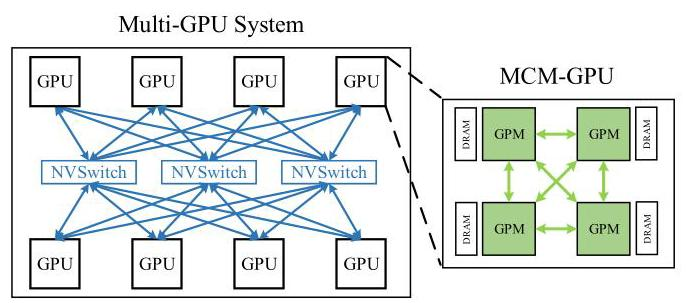
Figure 1: Forward-looking multi-GPU system. Each GPU has multiple GPU modules (GPMs).
图1：前瞻性的多GPU系统。每个GPU包含多个GPU模块（GPMs）。
To extend GPUs into more general-purpose domains, GPU vendors have released very precisely-defined scoped memory models [21-24]. These models allow flexible communication and synchronization among threads in the same CTA, the same GPU, or anywhere in the system, usually by requiring programmers to provide scope annotations for synchronization operations. Scopes allow synchronization and coherence to be maintained entirely within a narrow subset of the full-system cache hierarchy, thereby delivering improved performance over system-wide synchronization enforcement. Furthermore, unlike most CPU memory models, these GPU models are now non-multi-copy-atomic: they do not require that memory accesses become visible to all observers at the same logical point in time. As a result, there is room for forward-looking GPU cache coherence protocols to be made even more relaxed, and hence capable of delivering even higher throughput, than protocols proposed in prior work (as outlined in Section III).
为了将GPU扩展到更通用的领域，GPU厂商已经发布了精确定义的作用域内存模型（scoped memory models）[21-24]。这些模型允许在同一CTA（协作线程阵列）、同一GPU或系统中任何位置的线程之间进行灵活的通信与同步，通常要求程序员为同步操作提供作用域注释（scope annotations）。作用域允许同步和一致性完全在系统缓存层次结构的狭窄子集内维护，从而相较于系统范围同步执行提供更好的性能。此外，与大多数CPU内存模型不同，这些GPU内存模型现在是非多副本原子性的（non-multi-copy-atomic）：它们不要求内存访问在同一逻辑时间点对所有观察者可见。因此，前瞻性的GPU缓存一致性协议有空间被设计得更加宽松，从而能够实现比先前工作中提出的协议（如第III节所述）更高的吞吐量。
Previously explored GPU coherence schemes [5, 13-16, 25- 27] were well tuned for GPUs and much simpler than CPU protocols, but few have studied how to scale these protocols to larger multi-GPU systems with deeper cache hierarchies. To test their efficiency, we simply apply the existing software and hardware coherence protocols GPU-VI [15] on a 4- GPU system, in which each GPU consists of 4 separate GPU modules (GPMs). These protocols do not account for architectural hierarchy; we simply extend them as if the system were a flat platform of 16 GPMs. As Fig. 2 shows, in hierarchical multi-GPU systems, existing non-hierarchical software and hardware VI coherence protocols indeed leave plenty room for improvement; see Section III for details. We therefore ask the following question: how do we extend existing GPU coherence protocols across multiple GPUs while simultaneously providing high-performance support for flexible fine-grained synchronization within emerging GPU applications, and without a dramatic increase in protocol complexity?
先前探索的GPU一致性方案（coherence schemes）[5, 13-16, 25- 27]针对GPU进行了良好的调优，且比CPU协议简单得多，但很少有研究探讨如何将这些协议扩展到拥有更深缓存层次的大型多GPU系统。为测试其效率，我们直接将现有的软件与硬件一致性协议GPU-VI[15]应用在一个4-GPU系统上，其中每个GPU由4个独立的GPU模块（GPU modules，GPM）组成。这些协议并未考虑架构层次；我们只是简单地将其扩展，仿佛整个系统是一个由16个GPM组成的扁平平台。如图2所示，在层次化多GPU系统中，现有的非层次化软件与硬件VI一致性协议（VI coherence protocols）确实留下了大量改进空间；详见第三节。据此，我们提出如下问题：如何在将现有GPU一致性协议扩展到多GPU环境的同时，为新兴GPU应用中灵活的细粒度同步（fine-grained synchronization）提供高性能支持，而又不显著增加协议复杂度（protocol complexity）？
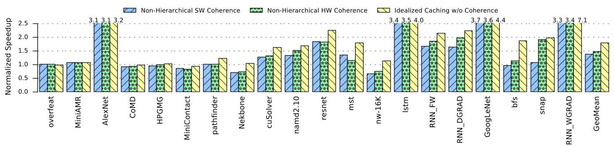
Figure 2: Benefits of caching remote GPU data under three different protocols on a 4-GPU system with 4 GPMs per GPU, all normalized to a baseline which has no such caching. The results show that existing protocols leave room for improvement when extended to multiple GPUs.
图2：在三种不同协议下缓存远程 GPU 数据的收益，基于一个每个 GPU 配有 4 个 GPM（GPU 模块）的 4-GPU 系统，所有结果均归一化至无此类缓存的基线。结果表明，现有协议在扩展到多个 GPU 时仍有改进空间。
We propose HMG, a hardware-managed cache coherence protocol designed to extend coherence guarantees across forward-looking Hierarchical Multi-GPU systems with scoped memory consistency models. Unlike prior CPU and GPU protocols that enforce multi-copy-atomicity and/or track ownership within the protocol, HMG eliminates transient states and/or extra hardware structures that would otherwise be needed to cover the latency of acquiring write permissions [15, 16]. HMG also filters out unnecessary invalidation acknowledgment messages, since a write can be processed instantly if multi-copy-atomicity is not required. Similarly, unlike prior work that filters coherence traffic by tracking the read-only state of data regions [14, 16], HMG relies on precise but hierarchical tracking of sharers to mitigate the performance impact of bandwidth-limited inter-GPU links without adding unnecessary coherence traffic. As such, HMG is able to scale up to large multi-GPU systems, while nevertheless maintaining the simplicity and implementability that made prior GPU cache coherence protocols popular [15].
我们提出 HMG，一种硬件管理的缓存一致性协议 (hardware-managed cache coherence protocol)，旨在将一致性保证扩展到具有作用域内存一致性模型 (scoped memory consistency models) 的前瞻性层次化多 GPU 系统 (Hierarchical Multi-GPU systems)。与先前强制多副本原子性 (multi-copy-atomicity) 和/或在协议内追踪所有权的 CPU 和 GPU 协议不同，HMG 消除了否则为覆盖获取写权限的延迟所需的瞬态 (transient states) 和/或额外硬件结构 [15, 16]。HMG 还滤除了不必要的失效确认 (invalidation acknowledgment) 消息，因为如果不要求多副本原子性，写入可以立即处理。类似地，与先前通过追踪数据区域的只读状态来过滤一致性流量的工作 [14, 16] 不同，HMG 依赖于精确但层次化的共享者跟踪 (precise but hierarchical tracking of sharers)，以减轻带宽受限的 GPU 间链路的性能影响，同时不增加不必要的一致性流量。因此，HMG 能够扩展到大型多 GPU 系统，同时仍保持使先前 GPU 缓存一致性协议得以普及的简洁性和可实现性 [15]。
Overall, this paper makes the following contributions:
总体而言，本文做出了以下贡献：
- We study the architectural implications of extending cache coherence protocols to multi-GPU systems. To the best of our knowledge, this is the first study of multi-MCM, multi-GPU hardware coherence under a scoped, non-multi-copy-atomic memory model.
我们研究将缓存一致性协议扩展到多 GPU 系统的架构影响。据我们所知，这是在作用域化（scoped）、非多副本原子（non-multi-copy-atomic）内存模型下对多 MCM、多 GPU 硬件一致性的首次研究。
- We show that while it is possible to extend existing software or hardware coherence protocols to multi-GPU systems, performance is very inefficient without mechanisms in place to exploit intra-GPU data locality and mitigate the inter-GPU/inter-module bandwidth constraints.
- 我们表明，虽然可以将现有的软件或硬件一致性协议 (coherence protocols) 扩展到多GPU系统 (multi-GPU systems)，但如果没有适当的机制来利用GPU内部数据局部性 (intra-GPU data locality) 并缓解GPU间/模块间带宽限制 (inter-GPU/inter-module bandwidth constraints)，性能将非常低下。
- We propose HMG, a hardware-managed cache coherence protocol for distributed L2 caches in hierarchical multi-GPU platforms. Our proposal not only mitigates the majority of the inter-GPU bandwidth related bottlenecks by improving intra-GPU data locality with hierarchical sharer tracking, but also eliminates unnecessary transient states and coherence messages found in previous proposals. HMG delivers 97% of the overall possible performance of an idealized system.
我们提出 HMG，一种面向分层多 GPU 平台中分布式 L2 缓存的硬件管理的缓存一致性协议 (hardware-managed cache coherence protocol)。我们的方案不仅通过分层共享者跟踪 (hierarchical sharer tracking) 提升 GPU 内数据局部性，从而缓解大部分与 GPU 间带宽相关的瓶颈，还消除了先前方案中存在的不必要的瞬态状态 (transient states) 和一致性消息 (coherence messages)。HMG 可达到理想化系统总体可能性能的 97%。
II. BACKGROUND
To avoid confusion around the term "shared memory" which is used to describe scratchpad memory on NVIDIA GPUs, we use "global memory" for the virtual address space shared by all CPUs and GPUs in a system.
为了避免术语“共享内存 (shared memory)”的混淆——该术语在 NVIDIA GPU 上被用于描述便签存储器 (scratchpad memory)——我们使用“全局内存 (global memory)”来表示系统中所有 CPU 和 GPU 共享的虚拟地址空间。
A. Hierarchical Multi-Module GPUs
Because the end of Moore's Law is limiting continued transistor density improvement, future multi-module GPU architectures will consist of a hierarchy in which each GPU is split into GPU modules (GPMs), as depicted in Fig. 1 [28]. Recent work has demonstrated the benefits of creating GPMs in the form of single-package multi-chip modules (MCMs) [5]. Researchers have explored the possibility of presenting a large hierarchical multi-GPU system to users as if it were a single large GPU [13], but mainstream GPU platforms today largely just expose the hierarchy directly to users so that they can manually optimize data and thread placement and migration decisions.
由于摩尔定律的终结限制了晶体管密度的持续提升，未来的多模块GPU架构将由一个层次结构组成，其中每个GPU被拆分为多个GPU模块 (GPU modules, GPMs)，如图1[28]所示。近期研究已经展示了以单封装多芯片模块 (multi-chip modules, MCMs) 形式创建GPMs的益处[5]。研究者探索过向用户呈现一个大规模层次化多GPU系统，使其看似单个大型GPU的可能性[13]，但当今主流GPU平台大多直接向用户暴露该层次结构，以便其手动优化数据和线程的放置与迁移决策。
The constrained bandwidth of the inter-GPM/GPU links is the main performance bottleneck on hierarchical GPU architectures. To mitigate this, both MCM-GPU and Multi-GPU explorations have scheduled adjacent CTAs to the same GPM/GPU to exploit inter-CTA data locality [5, 13]. These proposals map each memory page to the first GPM/GPU that touches it to increase the likelihood that caches will capture locality. They also extended a conventional GPU software coherence protocol to the L2 caches, and they showed that it worked well for traditional bulk-synchronous programs.
在层级GPU架构中，GPU模块间/GPU间链路的受限带宽是主要性能瓶颈。为缓解这一问题，MCM-GPU和多GPU探索方案均将相邻的协作线程阵列（CTA）调度至同一GPU模块/GPU，以利用CTA间数据局部性[5, 13]。这些方案将每个内存页映射到首次访问该页的GPU模块/GPU，从而提高缓存捕捉局部性的可能性。它们还将传统的GPU软件一致性协议扩展至L2缓存，并证明该方案对于传统的批量同步程序运行良好。
More recently, CARVE [14] proposed to allocate a fraction of local GPU DRAM as cache for remote GPU data, and enforced coherence using a simple protocol filtered by tracking whether data was private, read-only, or read-write shared. However, as CARVE neither tracked sharers nor used scopes, CARVE broadcast invalidation messages to all caches for read-write shared data.
近年来，CARVE [14] 提出将本地GPU DRAM的一部分分配为远程GPU数据的缓存，并通过一个基于数据状态（私有、只读或读写共享）跟踪的简单协议来强制执行一致性。然而，由于CARVE既不跟踪共享者也未使用范围（scopes），它会向所有缓存广播针对读写共享数据的无效化消息。
B. Emerging Programs Need Fine-Grained Communication
Nowadays, many applications contain fine-grained communication between CTAs of the same kernel and/or of dependent kernels [29-35]. For example, in RNNs, abundant inter-CTA communication exists in the neuron connections between continuous timesteps [36]. In the simulation of molecule or neutron dynamics [34, 35], inter-CTA communication is necessary for the movement dependency between different particles and different simulation timesteps. Graph algorithms usually dispatch vertices among multiple CTAs or kernels that need to exchange their individual update to the graph for the next round of computing until they reach convergence [4, 30]. We provide more details on the workloads we study in this paper in Section VI. All these applications can benefit from a hierarchical GPU system for higher performance and from the scoped memory model for efficient inter-CTA synchronization enforcement.
如今，许多应用包含同一内核的协作线程数组（CTA）之间和/或依赖内核的CTA之间的细粒度通信[29-35]。例如，在循环神经网络（RNN）中，连续时间步之间的神经元连接处存在大量CTA间通信[36]。在分子或中子动力学模拟[34, 35]中，不同粒子与不同模拟时间步之间的运动依赖性使得CTA间通信成为必要。图算法通常将顶点分发到多个CTA或多个内核之间，这些内核需要将其对图的各自更新进行交换，以便进行下一轮计算，直至达到收敛[4, 30]。我们在第VI节更详细地介绍了本文所研究的工作负载。所有这些应用都能从分层GPU系统（hierarchical GPU system）中获得更高性能，并受益于作用域内存模型（scoped memory model）以实现高效的CTA间同步执行。
C.GPU Memory Model
Both CUDA and OpenCL originally supported a coarse-grained bulk-synchronous programming model. Under this paradigm, data sharing between threads of the same CTA could be performed locally in the shared memory scratchpad and synchronized using CTA execution barriers; but inter-CTA synchronization was permitted only between dependent kernel calls (i.e., where data produced by one kernel is consumed by the following kernels). They could not, with guaranteed correctness, perform arbitrary communication using global memory. While many GPU applications work very well under a bulk-synchronous model with rare inter-CTA synchronizations, it quickly becomes a limiting factor for the types of emerging applications described in Section II-B.
CUDA 和 OpenCL 最初都支持一种粗粒度的批量同步编程模型 (coarse-grained bulk-synchronous programming model)。在这一范式下，同一 CTA 内的线程之间可以在共享内存暂存器 (shared memory scratchpad) 中本地进行数据共享，并使用 CTA 执行屏障 (CTA execution barriers) 进行同步；但 CTA 间的同步 (inter-CTA synchronization) 仅允许在依赖的内核调用 (kernel calls) 之间进行（即，一个内核产生的数据被后续内核消费）。它们无法以有保证的正确性使用全局内存 (global memory) 执行任意通信。虽然许多 GPU 应用程序在批量同步模型且 CTA 间同步稀少的情况下工作得非常好，但对于 Section II-B 中描述的新兴应用类型，这很快就成为一个限制因素。
To support data sharing more flexibly and more efficiently, both CUDA and OpenCL have shifted from bulk-synchronous models to more general-purpose scoped memory models [21- 24, 37]. By incorporating the notion of scope, these new models allow each thread to communicate with any other threads in the same CTA (.cta), the same GPU (.gpu), and anywhere in the system (.sys) \({}^{1}\) . Scope indicates the set of threads with which a particular memory access wishes to synchronize. Synchronization of scope . ct a is performed in the L1 cache of each GPU Streaming Multiprocessor (SM); synchronizations of scope . gpu and . sys are processed through the GPU L2 cache and via the memory hierarchy of the whole system, respectively.
为了更灵活、更高效地支持数据共享，CUDA 和 OpenCL 均已从批量同步模型转向更为通用的范围化内存模型（scoped memory models）[21-24, 37]。通过引入范围（scope）概念，这些新模型允许每个线程与同一 CTA（.cta）、同一 GPU（.gpu）以及系统中任意位置（.sys）\({}^{1}\) 的任何其他线程进行通信。范围指示了特定内存访问希望与之同步的线程集合。.cta 范围的同步在各 GPU 流式多处理器（SM）的 L1 缓存中执行；.gpu 和 .sys 范围的同步则分别通过 GPU L2 缓存和整个系统的内存层次结构进行处理。
D.GPU Cache Coherence
Some GPU protocols advocate for strong memory models, and hence they propose sophisticated cache coherence protocols capable of delivering good performance [27]. Most other GPU protocols enforce variants of release consistency by invalidating possibly stale values in caches when performing acquire operations (implicitly including the start of a kernel), and by flushing dirty data during release operations (implicitly including the end of a kernel). Much of the research in the area today proposes optimizations on top of these basic principles. We broadly classify this work by whether reads or writes are responsible for invalidating stale data.
一些GPU协议主张采用强内存模型（strong memory models），因此它们提出了能够实现良好性能的复杂缓存一致性协议（cache coherence protocols）[27]。绝大多数其他GPU协议则通过在执行获取操作（acquire operations，隐式包括内核（kernel）的启动）时使缓存中可能过时的值（stale values）失效，并在释放操作（release operations，隐式包括内核的结束）期间刷新脏数据（flushing dirty data），来强制执行释放一致性（release consistency）的变体。如今该领域的许多研究都在这些基本原则之上提出优化。我们根据是读操作（reads）还是写操作（writes）负责使过时数据失效，对这项工作进行了大致分类。
Among read-initiated protocols, hLRC [26] elided unnecessary cache invalidations and flushes by lazily performing coherence actions when synchronization variables change registration. Furthermore, the recent proposals of DeNovo [16] and VIPS [38] can protect read-only or private data from invalidation. However, they incur additional overheads and/or require software changes to convey region information for read-only data, ownership tracking in word granularity, or coarse-grained (memory page level) \({}^{2}\) private/shared data classification.
在读取发起的协议 (read-initiated protocols) 中，hLRC 协议 (hLRC) [26] 通过当同步变量改变注册状态时惰性地执行一致性操作，避免了不必要的高速缓存失效 (cache invalidations) 和刷新 (flushes)。此外，近期提出的 DeNovo 协议 (DeNovo) [16] 和 VIPS 协议 (VIPS) [38] 可以保护只读数据 (read-only data) 或私有数据 (private data) 免受失效 (invalidation)。然而，它们会引入额外的开销 (overheads) 和/或需要软件修改 (software changes)，以传达只读数据的区域信息 (region information)、字粒度 (word granularity) 的所有权跟踪 (ownership tracking)，或粗粒度（内存页面级）\({}^{2}\) 的私有/共享数据分类 (coarse-grained (memory page level) private/shared data classification)。
As for write-initiated cache invalidations, previous work has observed that MESI-like coherence protocols are a poor fit for GPUs [15, 25]. QuickRelease [25] reduced the overhead of cache flush by enforcing the partial order of writes with a FIFO. However, QuickRelease needs to partition the resources required by reads and writes; it also broadcasts invalidations to all remote caches. GPU-VI [15] is a simple yet effective hardware cache coherence protocol, but it predated scoped memory models and introduced extra overheads to enforce multi-copy-atomicity, which is no longer necessary. Also, GPU-VI was proposed for use within a single GPU, and did not consider the added complexity of having various bandwidth tiers.
针对写发起的高速缓存无效化（write-initiated cache invalidations），此前的工作已观察到类MESI一致性协议并不适合GPU [15, 25]。QuickRelease [25]通过使用FIFO强制执行写入偏序（partial order of writes），减少了高速缓存刷新（cache flush）的开销。然而，QuickRelease需要分区读和写所需的资源；它还会向所有远程高速缓存广播无效化。GPU-VI [15]是一种简单而有效的硬件高速缓存一致性协议，但它早于作用域内存模型（scoped memory models），并引入了额外的开销来强制执行多副本原子性（multi-copy-atomicity），而这一点已不再必要。此外，GPU-VI被提议用于单个GPU内部，并未考虑存在多种带宽层级（bandwidth tiers）所带来的额外复杂性。
III.THE NOVEL COHERENCE NEEDS OF MODERN MULTI-GPU SYSTEMS
To scale coherence across multiple GPUs, the design of HMG not only considers the architectural hierarchy of modern GPU systems (Fig. 1), but also aggressively takes advantage of the latest scoped memory models (Section II-C). Before diving into the details of HMG, we first describe our main insights below.
为了在多GPU间扩展一致性，HMG的设计不仅考虑了现代GPU系统的架构层次（图1），还积极利用了最新的范围化内存模型（scoped memory models）（第II-C节）。在深入探讨HMG的细节之前，我们首先阐述以下主要见解。
\({}^{1}\) We use NVIDIA terminology in this paper. Equivalent scopes in HRF are work-group, device, and system [24].
\({}^{1}\) 本文使用 NVIDIA 术语 (NVIDIA terminology)。在 HRF 中，等效的作用域 (scopes) 是工作组 (work-group)、设备 (device) 和系统 (system) [24]。
\({}^{2}\) GPUs need large pages (e.g.,2MB) to ensure high TLB coverage. Smaller pages can cause severe TLB bottlenecks [39].
\({}^{2}\) GPU 需要大页（例如2MB）以确保高快表 (TLB) 覆盖率。较小的页可能导致严重的快表 (TLB) 瓶颈[39]。
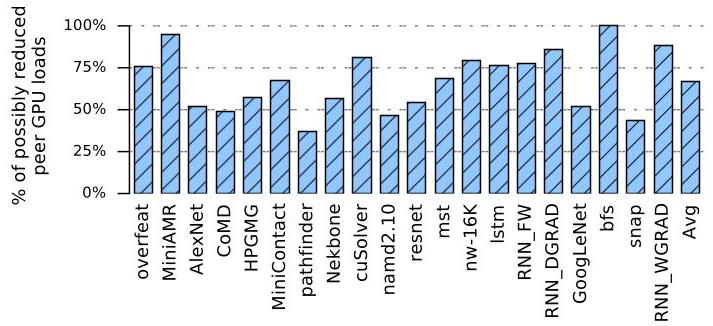
Figure 3: Percentage of inter-GPU loads destined to addresses accessed by another GPM in the same GPU.
图3：发往同一GPU内另一个GPU模块 (GPM) 所访问地址的跨GPU加载 (inter-GPU loads) 的百分比。
A. Extending Coherence to Multiple GPUs
As described in Section II-D, prior GPU coherence protocols mainly focused on mechanisms that mitigate the impact of bulk cache invalidations. However, as Fig. 2 shows, even fine-grained hardware VI cannot close the gap between what non-hierarchical protocols achieve and an idealized caching scenario. In future multi-GPUs, larger shared L2 caches will only amplify the cost of coarse-grained cache invalidations and of reloading invalidated data from remote GPUs via bandwidth-limited links. Indeed, Fig. 3 shows that it is common for multiple GPMs on the same GPU to redundantly access a common range of addresses stored on remote GPUs. We therefore build HMG as a hierarchical protocol capable of being extended across multiple GPUs.
如第 II-D 节所述，先前的 GPU 一致性协议主要关注于减轻批量缓存失效（bulk cache invalidations）影响的机制。然而，如图 2 所示，即便是细粒度硬件 VI 也无法弥合非分层协议（non-hierarchical protocols）所能达到的性能与理想化缓存场景（idealized caching scenario）之间的差距。在未来的多 GPU 系统中，更大的共享 L2 缓存只会放大粗粒度缓存失效（coarse-grained cache invalidations）以及通过带宽受限链路从远程 GPU 重新加载失效数据的开销。事实上，图 3 显示，同一 GPU 上的多个 GPM（GPU 模块）频繁地冗余访问存储在远程 GPU 上的同一地址范围是常见现象。因此，我们构建了 HMG，作为一种能够跨多个 GPU 扩展的分层协议。
There has been much research into hierarchical cache coherence for CPUs. However, unlike GPUs, CPUs usually enforce a stronger memory model (e.g., TSO) and have much stricter latency requirements. As such, CPU coherence protocols such as MESI track ownership to exploit write data locality [40-42]. Many transient states are added to reduce the coherence stalls, resulting in prohibitive verification complexity [43]. Industrial products implemented more aggressive optimizations. For example, Sun's WildFire had special OS support for memory page replication and migration [44]. Intel's Skylake introduced IO directory cache and HitMe cache to reduce memory access latency [42]. These complexities are appropriate for latency-bound CPUs, but GPUs permit far more relaxed memory behavior, and hence HMG shows that the costs of such CPU-like protocols remain unnecessary for multi-GPUs.
关于 CPU 的分层缓存一致性已有大量研究。然而，与 GPU 不同，CPU 通常强制执行更强的内存模型（如 TSO），并且对延迟的要求严格得多。因此，MESI 等 CPU 一致性协议会跟踪所有权以利用写数据局部性 [40-42]。为了减少一致性停顿，会添加许多暂态，这导致了难以承受的验证复杂性 [43]。工业产品实现了更激进的优化。例如，Sun 的 WildFire 为内存页面复制与迁移提供了特殊的操作系统支持 [44]。Intel 的 Skylake 引入了 IO 目录缓存和 HitMe 缓存，以降低内存访问延迟 [42]。这些复杂性适用于延迟受限的 CPU，但 GPU 允许更宽松的内存行为，因此 HMG 表明，对于多 GPU 而言，此类类 CPU 协议的成本仍然是不必要的。
B. Leveraging GPU Weak Memory Models
Besides the change of hardware architecture, scoped GPU memory models also inform the design of a good GPU coherence hierarchy. While non-scoped CPU memory models require all memory accesses to be kept coherent, GPU memory models that do explicitly expose scopes as part of the programming model require coherence to be enforced only at synchronization boundaries, and only with respect to other threads in the scope in question. The NVIDIA GPU memory model makes this relaxed nature of coherence very explicit [21]. A common pattern in multi-GPU applications will be for CTA or kernels running on a single GPU to synchronize with each other first, and with kernels on other GPUs less frequently. Such patterns rely heavily on the comparative efficiency of .gpu scope over . sys scope; while some prior work has concluded that scopes are unnecessary within a single GPU [16], the latency/bandwidth gap between the broadest and narrowest scope is an order of magnitude larger in multi-GPU environments.
除了硬件架构的变化，带作用域的 (scoped) GPU 内存模型也为设计良好的 GPU 一致性层次提供了指导。非作用域的 (non-scoped) CPU 内存模型要求所有内存访问都保持一致性，而显式将作用域作为编程模型一部分暴露出来的 GPU 内存模型，则要求仅在同步边界处强制一致性，且仅针对所涉作用域内的其他线程。NVIDIA GPU 内存模型非常明确地体现了这种宽松的一致性本质 [21]。多 GPU 应用程序中的常见模式是，在单个 GPU 上运行的 CTA 或内核首先相互同步，而与其它 GPU 上内核的同步则不那么频繁。此类模式严重依赖于 .gpu 作用域相对于 .sys 作用域的相对效率；虽然一些先前工作得出的结论是，单个 GPU 内作用域是不必要的 [16]，但在多 GPU 环境中，最宽作用域和最窄作用域之间的延迟/带宽差距要大一个数量级。
Furthermore, although some prior work has proposed multi-copy-atomic memory models for GPUs [45], recent GPU scoped memory models have since formalized the lack of such a requirement [21, 24]. Loosely speaking, multi-copy-atomicity requires memory to behave as if it were a single atomic unit, with only thread-private buffering allowed between cores and memory. As GPUs share an L1 cache across an SM, GPUs today are not multi-copy-atomic. Multi-copy-atomicity also can create apparent delays for subsequent memory accesses. Most CPUs enforce multi-copy-atomicity using sophisticated coherence protocols with many transient states and by using out-of-order execution and speculation to hide the latency overheads. Some prior studies have found that single-GPU coherence protocols can also tolerate multi-copy-atomicity. For example, to reduce stalls, GPU-VI [15] added 3 and 12 transient states and 24 and 41 coherence state transitions in the L1 and L2 caches, respectively. In multi-GPU environments, however, the round trip time to remote GPUs is an order of magnitude larger and would put significantly increased pressure on the coherence protocol's ability to hide the latency. Instead, by leveraging non-multi-copy-atomicity, HMG eliminates transient states and invalidation acknowledgments altogether.
此外，尽管此前有工作提出面向 GPU 的多副本原子性（multi-copy-atomic）内存模型 [45]，但近年来的 GPU 范围化（scoped）内存模型已正式明确了无需满足这一要求 [21, 24]。粗略地说，多副本原子性要求整个内存表现得如同一个原子整体，核心与内存之间仅允许线程私有缓冲。由于 GPU 在一个 SM 内共享 L1 缓存，当今的 GPU 并非多副本原子。多副本原子性还可能为后续内存访问带来显著延迟。大多数 CPU 通过使用带有大量瞬态（transient）状态的复杂一致性协议，并借助乱序执行与推测来隐藏延迟开销，从而强制实现多副本原子性。此前某些研究发现，单 GPU 一致性协议也能容忍多副本原子性。例如，为减少停顿，GPU-VI [15] 分别在 L1 和 L2 缓存中添加了 3 个和 12 个瞬态状态，以及 24 个和 41 个一致性状态转换。然而在多 GPU 环境中，到远程 GPU 的往返时间会大一个数量级，这将极大地增加一致性协议隐藏延迟的压力。相反，HMG 利用非多副本原子性，完全消除了瞬态状态和失效确认（invalidation acknowledgments）。
IV. BASELINE NON-HIERARCHICAL CACHE COHERENCE
We now describe how a non-hierarchical cache coherence (NHCC) protocol can be optimized for modern weak GPU memory models. Like most scoped protocols, NHCC propagates synchronization memory accesses to different caches according to the user-provided scope annotations. As compared to GPU-VI [15], NHCC eliminates all transient states and most invalidation acknowledgments. However, it does not take the architectural hierarchy into account. As such, it will serve as our baseline during our later evaluations. In the next section, we will extend NHCC with a notion of hierarchy so that it scales better on larger multi-GPU systems like Fig. 1.
我们现在描述如何针对现代弱GPU内存模型优化非层次化缓存一致性（non-hierarchical cache coherence, NHCC）协议。与大多数作用域协议类似，NHCC会根据用户提供的作用域标注（scope annotations），将同步内存访问传播到不同的缓存。与GPU-VI [15]相比，NHCC消除了所有瞬态状态和大部分无效化确认。然而，它并未考虑架构层次（architectural hierarchy）。因此，在后续评估中它将作为我们的基线（baseline）。下一节中，我们将为NHCC引入层次化概念，使其在如图1所示的更大规模多GPU系统上具有更好的可扩展性。
A. Architectural Overview
A high-level diagram of our baseline single-GPU architecture for NHCC is shown in Fig. 4. We assume L1 caches remain software-managed and write-through, as in GPUs today. Each GPU module (GPM) has an L2 cache that holds both local and remote-GPM DRAM accesses contending for cache capacity with a typical replacement policy such as least-recently-used (LRU). To support hardware inter-GPM coherence, one GPM in the system is chosen by some hash function as the home node for any given physical address. The home node always contains the most up-to-date value at each memory location.
图4展示了我们为NHCC设计的基线单GPU架构的高层示意图。我们假设L1缓存仍为软件管理并采用写通（write-through）策略，与现代GPU一致。每个GPU模块（GPM）包含一个L2缓存，用于存放本地及远程GPM DRAM的访问数据，它们通过类似最近最少使用（LRU）等典型替换策略竞争缓存容量。为支持硬件层面的跨GPM一致性，系统通过某种哈希函数（hash function）为任意物理地址选取一个GPM作为归属节点（home node）。归属节点始终保存着每个内存位置的最新数值。
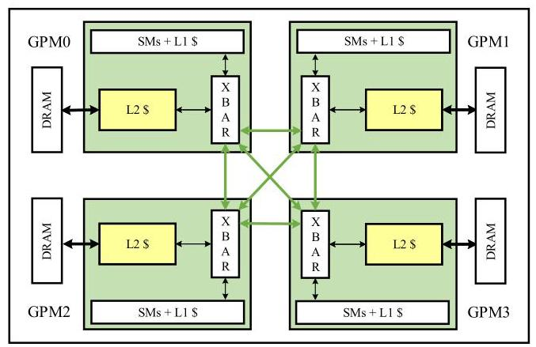
Figure 4: Future GPUs will consist of multiple GPU modules (GPMs). For example, each GPM might be a chiplet in a single package.
图4：未来的GPU将由多个GPU模块（GPU module, GPM）组成。例如，每个GPM可能是单个封装内的小芯片（chiplet）。
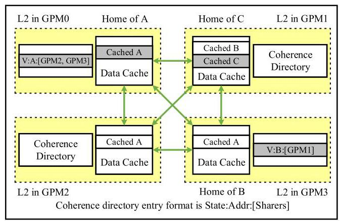
Figure 5: NHCC coherence architecture. The dotted yellow boxes are the L2 caches from Fig. 4. The shaded gray cache lines and directory entries indicate lines for which the GPM in question is the home node.
图 5：NHCC 一致性架构（NHCC coherence architecture）。黄色虚线框是图 4 中的二级缓存（L2 caches）。阴影灰色的缓存行和目录条目表示相关 GPM 是其归属节点（home node）的缓存行。
Like many protocols, NHCC attaches an individual directory to every L2 cache within each GPM. The coherence directory is organized as a traditional set-associative structure. Each directory entry tracks the identity of all GPM sharers, along with coherence state. Like GPU-VI [15], each line can be tracked in one of two stable states: Valid and Invalid. However, unlike GPU-VI, NHCC does not have transient states, and it requires acknowledgments only for release operations. Non-synchronizing stores (i.e., the vast majority) do not require acknowledgments in NHCC.
与许多协议类似，NHCC 在每个 GPM 内的每个二级缓存（L2 cache）上都附带一个单独的目录。该一致性目录（coherence directory）以传统的组相联（set-associative）结构组织。每个目录项（directory entry）跟踪所有 GPM 共享者（sharer）的身份以及一致性状态（coherence state）。与 GPU-VI [15] 类似，每一行（line）可以在两种稳定状态之一被跟踪：有效（Valid）和无效（Invalid）。然而，与 GPU-VI 不同的是，NHCC 没有瞬态状态（transient state），并且它仅需要为释放操作（release operation）发送确认（acknowledgment）。非同步存储（Non-synchronizing store）（即绝大多数存储操作）在 NHCC 中不需要确认。
We assume a non-inclusive inter-GPM L2 cache architecture to enable data to be cached freely across the different GPMs. Fig. 5 shows an example in which GPM0 serves as the home node for address A. Other GPMs may cache the value at A locally, but GPM0 maintains the authoritative copy. In the same figure, address B is cached in GPM1, even though GPM3 (the home node for B) is not caching B. Similarly, data can be cached in the home node only, as with address C in our example in Fig. 5.
我们假设采用非包含式跨 GPU 模块（GPM）的 L2 缓存架构，使得数据可以在不同 GPM 之间自由缓存。图 5 展示了一个例子，其中 GPM0 作为地址 A 的宿主节点（home node）。其他 GPM 可以在本地缓存地址 A 的值，但 GPM0 持有权威副本（authoritative copy）。在同一图中，地址 B 被缓存在 GPM1 中，尽管 GPM3（地址 B 的宿主节点）并未缓存 B。类似地，数据可以仅在宿主节点中缓存，如图 5 示例中的地址 C。
In NHCC, explicit coherence maintenance messages (i.e., cache invalidations) are sent only in two cases: when there is read-write sharing between CTAs on different GPMs, and when there is a directory capacity eviction. The fact that most memory accesses incur no coherence overhead ensures that the GPU does not deviate from peak throughput in the GPU common case where data is either read-only or CTA-private. We measure the impact of coherence messages in Section VII.
在 NHCC 中，显式的相干性维护消息（即缓存无效化）仅在两种情况下发送：不同 GPU 模块 (GPM) 上的协作线程阵列 (CTA) 之间存在读写共享时，以及发生目录容量驱逐时。大多数内存访问不会产生相干性开销，这一事实确保了 GPU 在数据为只读或 CTA 私有的常见场景下不会偏离峰值吞吐量。我们在第七节中测量了相干性消息的影响。
To explain the basics of NHCC, we track the life of a memory reference as an example. First, a memory access from the SM queries the L1 cache. Upon a L1 miss or write, the request is routed to the local GPM L2 cache. If the request misses in the L2 (or writes to L2, again assuming a write-through policy), the address is checked to determine if the local GPM is the home node for this reference. If so, the request is routed to local DRAM. Otherwise, the request is routed to the L2 cache of the home node via the inter-GPM links. The request may then hit in the home node L2 cache, or it may get routed through to that particular GPM's off-chip memory. We provide full details below.
为了说明 NHCC（非分层缓存一致性，Non-Hierarchical Cache Coherence）的基本原理，我们以一个内存引用（memory reference）的生命周期为例进行追踪。首先，来自 SM（流式多处理器，Streaming Multiprocessor）的内存访问会查询 L1 缓存。一旦发生 L1 未命中或写入，请求会被路由到本地 GPM（GPU 模块）的 L2 缓存。如果请求在 L2 中未命中（或写入 L2，同样假设采用写直达策略），则会检查地址以确定本地 GPM 是否是该引用的主节点（home node）。若是，请求将被路由到本地 DRAM。否则，请求会通过 GPU 模块间链路（inter-GPM links）被路由到主节点的 L2 缓存。该请求随后可能在主节点的 L2 缓存中命中，也可能被进一步路由到该特定 GPM 的片外存储器（off-chip memory）。我们在下文提供了完整的细节。
B. Coherence Protocol Flows in Detail
Table I details the full operation of NHCC. In this table, "local" refers to operations issued by the same GPM as the L2 cache which is handling the request. "Remote" requests are those originally issued by other GPMs. We walk through the entries in the table below.
表I详细说明了NHCC的完整操作。在该表中，“local”指由处理请求的L2缓存所在的同一GPM（GPU模块）发出的操作。“Remote”指由其他GPM最初发出的请求。接下来我们逐条讲解下表中的条目。
Local Loads: When a local load request reaches the local L2 cache partition, if it hits, a reply is sent back to the requester directly. If the request misses, the next destination depends on where the data is mapped by the address hash function. If the local L2 cache partition happens to be the home node for the address being accessed, the request will be sent to DRAM. Otherwise, the load request will be forwarded to the home node. Loads with . gpu or . sys scope must always miss in the L1 cache and in the non-home L2 caches to guarantee forward progress.
本地加载：当本地加载请求到达本地L2缓存分区时，如果命中，回复将直接发送回请求者。如果请求未命中，下一个目的地取决于地址哈希函数将数据映射到何处。如果本地L2缓存分区恰好是所访问地址的主节点（home node），请求将被发送到DRAM。否则，加载请求将被转发到主节点（home node）。带有 . gpu 或 . sys 范围的加载操作必须始终在L1缓存和非主节点L2缓存中未命中，以保证前向进展。
Local Stores: Depending on L2 design, local stores may be stored as dirty data in the L2 cache, or alternatively they may be written through and stored as clean data in the L2 cache. All stores with scope greater than . cta (i.e., . gpu and . sys) must be written through in order to ensure forward progress. Data which is written back or written through the L2 is sent directly to DRAM if the local L2 cache is the home node for the address in question, or it is relayed to the home node otherwise. If the local GPM is the home node and the coherence directory has recorded any sharers for the address in question, then these sharers must be notified that the data has been changed. As such, a local store triggers an invalidation message being sent to each sharer. These invalidations propagate in the background, off the critical path of any subsequent reads. There are no invalidation acknowledgments.
本地存储（Local Stores）：取决于二级缓存（L2）设计，本地存储可能作为脏数据存储在 L2 缓存中，或者也可能通过写通（write through）并以干净数据形式存储在 L2 缓存中。所有范围（scope）大于 .cta（即 .gpu 和 .sys）的存储操作都必须采用写通方式，以确保前向进度（forward progress）。被写回（write back）或写通L2的数据，如果本地 L2 缓存是该地址的归属节点（home node），则直接发送至 DRAM；否则，数据将被转发至归属节点。如果本地 GPM 是归属节点，且一致性目录（coherence directory）已记录了该地址的任何共享者（sharer），则必须通知这些共享者数据已被更改。因此，一次本地存储会触发向每个共享者发送一条无效化（invalidation）消息。这些无效化操作在后台传播，不处于任何后续读取的关键路径（critical path）上。不存在无效化确认（invalidation acknowledgment）。
| State | Local Ld | Local St/Atom | Remote Ld | Remote St/Atom | Replace Dir Entry | Invalidation |
| I | - | - | add $s$ to sharers, $\rightarrow \mathrm{V}$ | add $s$ to sharers, $\rightarrow \mathrm{V}$ | N/A | - |
| V | - | inv all sharers, $\rightarrow \mathrm{I}$ | add $s$ to sharers | add $s$ to sharers, inv other sharers | inv all sharers, $\rightarrow \mathrm{I}$ | forward inv to all sharers (HMG only), $\rightarrow$ I |
Table I: NHCC and HMG coherence directory transition table. \(s\) refers to the sender of the message.
表 I：NHCC 与 HMG 一致性目录转换表。\(s\) 指消息的发送者。
Remote Loads: When a remote load arrives at the local home L2 cache, it either hits in the cache and returns data to the requester, or it misses and forwards the request to DRAM. The coherence directory also records the ID of the requesting node. If the line is already being tracked, the requesting ID is simply added as an additional sharer. If the line is not being tracked yet, a new entry is allocated in the directory, possibly by evicting another valid entry (discussed further below).
当远程加载（remote load）到达本地归属 L2 缓存（local home L2 cache）时，它要么在缓存中命中并返回数据给请求者，要么缺失并将请求转发至 DRAM。一致性目录（coherence directory）同时记录请求节点（requesting node）的 ID。如果该缓存行（line）已被跟踪，则将请求 ID 简单地添加为额外的共享者（sharer）。如果该缓存行尚未被跟踪，则在目录中分配一个新条目（entry），这可能需要逐出另一个有效条目（valid entry）（下文将进一步讨论）。
Remote Stores: Remote stores that arrive at a home L2 are cached and written through or written back to DRAM, depending on the configuration of the L2. Since the requesting GPM may also be caching the stored data, the requester is recorded as a sharer. Since the data has been changed, all other sharers should be invalidated.
远程存储 (Remote Stores)：到达归属 L2 (home L2) 的远程存储被缓存，并根据 L2 的配置以写直达 (write through) 或写回 (write back) 方式写入 DRAM。由于发起请求的 GPU 模块 (GPM) 可能也在缓存所存储的数据，请求者被记录为共享者 (sharer)。由于数据已被更改，所有其他共享者都应被作废 (invalidated)。
Atomics and Reductions: Atomic operations must always be performed at the home node L2. From a coherence transition perspective, these operations are treated as stores.
原子操作与归约操作 (Atomics and Reductions)：原子操作必须始终在归属节点 L2 执行。从一致性状态转换的角度来看，这些操作被视为存储操作。
Invalidations: Upon receiving an invalidation request, any local clean copy of the address in question is invalidated. No acknowledgment needs to be sent.
无效化（Invalidation）：当收到无效化请求时，所涉及地址的任何本地干净副本都会被无效化。无需发送确认。
Directory Entry Eviction/Replacement: Because the coherence directory is implemented as a set-associative cache, there may be entry evictions due to capacity and conflict misses. To ensure correctness, invalidation messages must be sent to all sharers of the entry that is being evicted. As with invalidations triggered by stores, these invalidations propagate in the background and do not require acknowledgments to be sent in return.
目录条目淘汰/替换（Directory Entry Eviction/Replacement）：由于一致性目录实现为组相联缓存（set-associative cache），可能会因容量和冲突缺失（capacity and conflict misses）而导致条目淘汰（entry evictions）。为确保正确性，必须向被淘汰条目的所有共享者（sharers）发送无效化消息（invalidation messages）。与由存储（stores）触发的无效化一样，这些无效化在后台传播（propagate），且不需要返回确认（acknowledgments）。
Acquire: Acquire operations greater than . cta scope (i.e., . gpu and . sys) invalidate the entire local L1 cache, following software coherence practice. However, they do not propagate past the L1 cache, as L2 coherence in GPMs is now maintained using NHCC.
获取 (Acquire): 大于 .cta 范围（即 .gpu 和 .sys）的获取操作会失效整个本地 L1 缓存，遵循软件一致性实践。然而，它们不会传播到 L1 缓存之外，因为 GPM 中的 L2 一致性现在使用 NHCC 来维护。
Release: Release operations trigger a writeback of all dirty data to the respective home nodes, if writeback caches are being used. Releases also ensure completion of any write-through operations and invalidation messages that are still in flight. Release operations greater than .cta scope are propagated through the local L2 to all remote L2s to ensure that all invalidation messages have arrived at their destinations. Once this step is complete, each remote L2 sends back an acknowledgment for the release operation itself. The local L2 then collects these acknowledgments and returns a single response to the original requester.
释放操作（Release）：如果使用了写回缓存（writeback caches），释放操作会触发将所有脏数据（dirty data）写回（writeback）至相应的归宿节点（home nodes）。释放操作还会确保所有仍在传输中（in flight）的写直达操作（write-through operations）和无效化消息（invalidation messages）完成。大于.cta 范围（.cta scope）的释放操作会通过本地 L2（L2）传播到所有远程 L2，以确保所有无效化消息都已到达目的地。此步骤完成后，每个远程 L2 都会针对该释放操作本身发回一个确认消息（acknowledgment）。然后本地 L2 收集这些确认消息，并向原始请求者（original requester）返回一个单一响应。
Cache Eviction: Two design options are possible upon cache line eviction. First, a clean cache line being evicted from an L2 cache in a non-home GPM could send a downgrade message to the home node. This allows the home node to delete the remote node as a sharer and will potentially save an invalidation message from being sent later. However, this is not required for correctness. The second option is to have valid clean cache lines get silently evicted. This eliminates the overhead of the downgrade message, but it triggers an unneeded invalidation message upon eventual eviction of the coherence directory entry. Optionally, dirty cache lines being evicted and written back can use a new message type indicating that the data must be updated but that the issuing GPM need not be tracked as a sharer going forward. Again, this optimization is not strictly required for correctness, but may be useful in implementations using writeback caches.
缓存逐出（Cache Eviction）：缓存行被逐出时有两种可行的设计选择。第一种，当一条干净缓存行从非归属 GPM 的 L2 缓存中被逐出时，可以向归属节点发送降级消息（downgrade message）。这允许归属节点将远程节点从共享者（sharer）列表中删除，并可能避免后续发送无效化消息。但这并非正确性所必需。第二种选择是让有效的干净缓存行静默逐出（silently evicted）。这消除了降级消息的开销，但会在最终逐出一致性目录条目（coherence directory entry）时触发不必要的无效化消息。可选地，当脏缓存行被逐出并写回时，可以使用一种新消息类型，表明数据必须更新，但发出请求的 GPM 之后无需被追踪为共享者。同样，这种优化并非严格为正确性所必需，但在使用写回缓存（writeback caches）的实现中可能很有用。
V. HIERARCHICAL MULTI-GPU CACHE COHERENCE
Like most prior work, NHCC is designed for single-GPU scenarios and does not take the hierarchy between intra- and inter-GPU connections into account. This becomes a problem as we try to extend protocols like NHCC to multiple GPUs, as inter-GPU bandwidth limitations become a bottleneck.
与大多数先前工作类似，非层次化硬件一致性协议 (NHCC) 专为单 GPU 场景设计，并未考虑 GPU 内部与 GPU 之间连接的层次结构。当我们试图将像 NHCC 这样的协议扩展到多个 GPU 时，这就成了问题，因为 GPU 间的带宽限制成为了瓶颈。
To better exploit intra-GPU data locality, we propose a hierarchical multi-GPU (HMG) cache coherence protocol that extends NHCC to be able to take advantage of the type of locality that Fig. 3 highlights. The HMG protocol fundamentally enables multiple cache requests from individual GPMs to be coalesced and/or cached within a single GPU before traversing the lower-bandwidth inter-GPU links, thereby saving bandwidth and energy.
为了更好地利用 GPU 内数据局部性，我们提出了一种分层多 GPU（HMG）缓存一致性协议，该协议扩展了 NHCC，使其能够利用图 3 所强调的那类局部性。HMG 协议从根本上允许来自单个 GPM（GPU 模块）的多个缓存请求在穿越较低带宽的 GPU 间链路之前，先在单个 GPU 内部进行合并和/或缓存，从而节省带宽和能耗。
A. Architectural Overview
HMG is composed of two layers. The first layer is designed for intra-GPU caching, while the second layer is targeted at optimizing memory request routing in inter-GPU settings. For the intra-GPU layer, we define a GPU home node for each given address within each individual MCM-GPU. An MCM-GPU home node manages inter-GPM coherence using NHCC described in Section IV. Using the intra-GPU coherence layer, data that is cached within a MCM-GPU can be consumed by multiple GPMs on that GPU without consulting a remote GPU.
HMG 由两层组成。第一层设计用于 GPU 内部（intra-GPU）缓存，而第二层则旨在优化 GPU 间（inter-GPU）场景下的内存请求路由。对于 GPU 内部层，我们在每个单独的多芯片模块 GPU（MCM-GPU）内为每个给定地址定义一个 GPU 归属节点（home node）。一个 MCM-GPU 归属节点使用第四节描述的 NHCC（NHCC）来管理 GPU 模块间（inter-GPM）一致性。利用该 GPU 内部一致性层，缓存在 MCM-GPU 中的数据可被该 GPU 上的多个 GPM 使用，而无需咨询远程 GPU。
We define one of the GPU home nodes for each address to be the system home node. The choice of system home node
我们为每个地址指定其中一个 GPU 归属节点（GPU home node）作为系统归属节点（system home node）。系统归属节点的选择
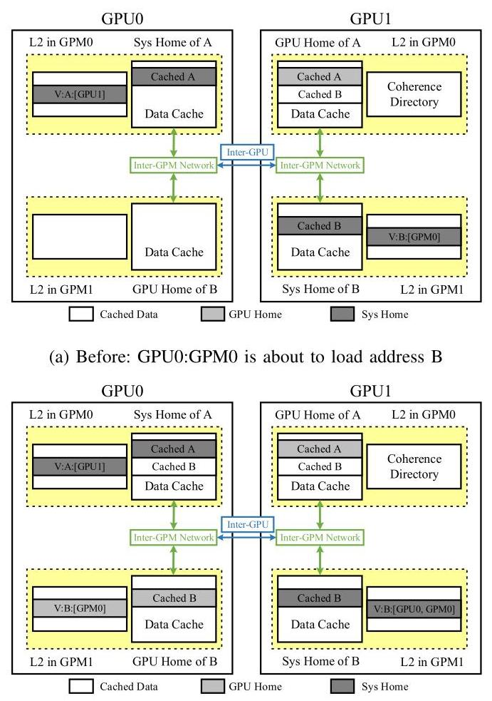
(b) After: B is cached in the L2 of the GPU0 home node for B as well as in the L2 of the original requester
（b）之后：B 被缓存在为 B 服务的 GPU0 家节点（home node）的 L2 中，以及原始请求者的 L2 中。
Figure 6: Hierarchical coherence in multi-GPU systems. Loads are routed from the requesting GPM to the GPU home node, and then to the system home node, and responses are returned and cached accordingly.
图6：多GPU系统中的分层一致性。加载请求从发起请求的GPU模块（GPM）路由至GPU主节点（GPU home node），再转发至系统主节点（system home node），随后响应沿原路返回并相应缓存。
can be made using any NUMA page allocation policy, such as first touch page placement, NVIDIA Unified Memory [37], static distribution, or any other reasonable heuristic. Among multiple GPUs, sharers are tracked by the directory using a hierarchy-aware variant of the NHCC directory design. Specifically, each GPU home node will track any sharers among other GPMs in the same GPU. Each system home node will track any sharers among other GPUs, but not individual GPMs within these other GPUs. For an M-GPM, N-GPU system, each directory entry will therefore need to track as many as \(M + N - 2\) sharers.
可以使用任何NUMA页面分配策略来进行，例如首次接触页面放置(first touch page placement)、NVIDIA统一内存(Unified Memory)[37]、静态分布(static distribution)或任何其他合理的启发式方法。在多个GPU之间，共享者(sharers)由目录(directory)使用NHCC目录设计的层次感知变体(hierarchy-aware variant)进行跟踪。具体来说，每个GPU归属节点将跟踪同一GPU内其他GPM之间的任何共享者。每个系统归属节点将跟踪其他GPU之间的任何共享者，但不跟踪这些其他GPU内的各个GPM。对于具有M个GPM（GPU模块）和N个GPU的系统，每个目录条目因此最多需要跟踪\(M + N - 2\)个共享者。
The hierarchical caching mechanism of an example two-GPU system is shown in Fig. 6. Each GPU is shown with only two GPMs for brevity, but the protocol itself can extend to an arbitrary number of GPUs, with an arbitrary number of GPMs per GPU. In Fig. 6(a), the system home node of address A is the L2 cache residing in GPU0:GPM0. This particular L2 cache also serves as the GPU home node for the same address within GPU0. The L2 cache in GPU0:GPM1 is kept coherent with the L2 cache in GPU0:GPM0 using the intra-GPU protocol layer. The L2 cache in GPU1:GPM0 serves as the GPU1 home node for address A, and it is kept coherent with the L2 cache in GPU1:GPM1 using the intra-GPU layer. Both GPU home nodes are kept coherent using the inter-GPU protocol layer.
一个双GPU系统的分级缓存机制（hierarchical caching mechanism）示例如图6所示。为简洁起见，每个GPU仅显示两个GPM（GPU模块，GPU Module），但该协议本身可扩展至任意数量的GPU，且每个GPU可包含任意数量的GPM。在图6(a)中，地址A的系统归属节点（system home node）是驻留在GPU0:GPM0中的L2缓存。该特定L2缓存同时作为GPU0内同一地址的GPU归属节点（GPU home node）。GPU0:GPM1中的L2缓存通过GPU内协议层（intra-GPU protocol layer）与GPU0:GPM0中的L2缓存保持一致性。GPU1:GPM0中的L2缓存作为地址A的GPU1归属节点，并通过GPU内层（intra-GPU layer）与GPU1:GPM1中的L2缓存保持一致性。两个GPU归属节点则通过GPU间协议层（inter-GPU protocol layer）保持一致性。
Furthermore, suppose that from the state shown in Fig. 6(a), GPU0:GPM0 wants to load address B, and the system home node for address B is mapped to GPU1:GPM1. GPU0:GPM1 is the GPU0 home node for B, so the load request propagates from GPU0:GPM0 to GPU0:GPM1 (the GPU home node), and then to GPU1:GPM1 (the system home node). When the response is sent back to the requester, GPU0 (but not GPU0:GPM0 or GPU0:GPM1) is recorded as a sharer by the directory of the system home node GPU1:GPM1, and GPU0:GPM0 is recorded as a sharer by the directory of the GPU0 home node GPU0:GPM1, as shown in Fig. 6(b).
此外，假设从图6(a)所示的状态出发，GPU0:GPM0想要加载地址B，而地址B的系统主场节点（system home node）映射到GPU1:GPM1。GPU0:GPM1是地址B在GPU0的主场节点，因此加载请求从GPU0:GPM0传播到GPU0:GPM1（GPU主场节点），再到达GPU1:GPM1（系统主场节点）。当响应返回给请求者时，系统主场节点GPU1:GPM1的目录将GPU0（而非GPU0:GPM0或GPU0:GPM1）记录为共享者（sharer），而GPU0主场节点GPU0:GPM1的目录将GPU0:GPM0记录为共享者，如图6(b)所示。
B. Coherence Protocol Flows in Detail
HMG behaves similarly to Table I but adds the single extra transition shown in Table I. No extra coherence states are added. We highlight the important differences between NHCC and HMG as follows.
HMG（分层多GPU硬件管理一致性协议）的行为类似于表 I，但增加了表 I 中所示的单一额外转换。没有添加额外的一致性状态。我们强调NHCC（非分层硬件一致性协议）与HMG之间的重要区别如下。
Loads: Loads progress through the cache hierarchy from the local L2 cache, to the GPU home node, to the system home node. Specifically, loads that miss in the GPM-local L2 cache are routed to the GPU home node, unless the GPM-local L2 cache is already the GPU home node. From there, loads that miss in the GPU home node are routed to the system home node, unless the GPU home node is also the system home node. Loads that miss in the system home node are routed to DRAM.
加载操作（Loads）：加载操作沿着缓存层次结构依次经过本地 L2 缓存、GPU 归属节点（GPU home node）和系统归属节点（system home node）。具体来说，在 GPM（GPU 处理模块）本地 L2 缓存中未命中的加载操作会被路由到 GPU 归属节点，除非该 GPM 本地 L2 缓存本身已经是 GPU 归属节点。随后，在 GPU 归属节点中未命中的加载操作会被路由到系统归属节点，除非 GPU 归属节点同时也是系统归属节点。在系统归属节点中未命中的加载操作则被路由到 DRAM。
Non-synchronizing loads (i.e., the vast majority) and loads with . cta scope can hit in all caches. However, loads with . gpu scope must miss in all caches prior to the GPU home node. Loads with . sys scope must also miss in the GPU home node; they may only hit in the system home node.
非同步加载指令（即绝大多数）和具有 .cta 作用域的加载指令可以在所有缓存中命中。然而，具有 .gpu 作用域的加载指令必须在抵达 GPU 主节点 (GPU home node) 之前的所有缓存中缺失。具有 .sys 作用域的加载指令还必须在 GPU 主节点中缺失；它们只能在系统主节点 (system home node) 中命中。
Loads propagating from the GPU home node to the system home node do not carry information about the GPM that originally requested the data. Because this information is already stored by the GPU home node, it would be redundant to store it again in the directory of the system home node. Instead, invalidations are propagated to sharers hierarchically as described below.
从 GPU 归属节点 (GPU home node) 传播至系统归属节点 (system home node) 的加载操作 (Loads) 不携带最初请求数据的 GPM（GPU 处理模块）信息。由于 GPU 归属节点已保存该信息，在系统归属节点的目录 (directory) 中再次存储将是冗余的。相反，无效化操作 (invalidations) 按照下文所述的分层方式传播给共享者 (sharers)。
Stores: Stores are routed through a similar hierarchy as they write-through and/or write-back. Specifically, stores propagating past the GPM-local L2 cache are routed to the GPU home node (unless the GPM-local L2 is already the GPU home node), and stores propagating past the GPU home node are routed to the system home node (unless the GPU home node is already the system home node). Stores propagating past the system home node are written to DRAM. Similar to loads, stores or write-back/write-through operations propagating from the GPU home node to the system home node carry only the GPU identifier, not the identifier of the GPM within that GPU.
存储操作：存储操作沿类似的层次结构进行路由，并采用写直达 (write-through) 和/或写回 (write-back) 方式。具体而言，传播超出 GPM（GPU 模块）本地 L2 缓存的存储操作被路由至 GPU 归属节点 (GPU home node)（除非该 GPM 本地 L2 本身就是 GPU 归属节点），而传播超出 GPU 归属节点的存储操作则被路由至系统归属节点 (system home node)（除非该 GPU 归属节点本身就是系统归属节点）。传播超出系统归属节点的存储操作被写入 DRAM。与加载操作类似，从 GPU 归属节点传播至系统归属节点的存储操作或写回/写直达操作仅携带 GPU 标识符，而不携带该 GPU 内 GPM 的标识符。
Stores must be written through at least to the home node for the scope in question: the L1 cache for non-synchronizing and . cta-scoped stores, the GPU home node for . gpu-scoped stores, and the system home node for . sys-scoped stores. This ensures that synchronization operations will make forward progress.
对于相应作用域，存储操作必须至少写通到归属节点：对于非同步和 .cta-scoped (.cta-scoped) 的存储操作，写通到 L1 缓存；对于 .gpu-scoped (.gpu-scoped) 的存储操作，写通到 GPU 归属节点；对于 .sys-scoped (.sys-scoped) 的存储操作，写通到系统归属节点。这确保了同步操作能够取得前向进展。
Atomics and Reductions: Atomics are always performed in the home node for the scope in question and they continue to be treated as stores for the purposes of coherence protocol transitions, just as in NHCC. Once performed at the home node, responses are propagated back to the requester just as load responses are handled and the result is stored as a dirty line or written through to subsequent levels of the cache hierarchy, just as a store would be. For example, the result of a . gpu-scoped atomic read-modify-write operation performed in the GPU will be written through to the system home node, in systems which configure the GPU home node to be write-through for stores.
原子操作与归约（Atomics and Reductions）：原子操作始终在给定作用域（scope）对应的主节点（home node）中执行，并且在进行一致性协议状态转换时，它们仍被视为存储操作（store），与NHCC中一致。在主节点执行完毕后，响应会像处理加载响应一样被传播回请求者，其结果会作为脏行（dirty line）存储，或者像存储操作那样写穿（write through）到缓存层次结构的后续层级。例如，在GPU中执行的受GPU作用域约束的原子读-修改-写操作的结果，会被写穿至系统主节点，适用于将GPU主节点配置为对存储操作执行写穿的系统中。
Invalidations: Because sharers are tracked hierarchically, invalidations sent due to stores and directory evictions must also propagate hierarchically. Invalidations sent from the system or GPU home node to other GPMs in the same GPU are processed and dropped without acknowledgment, just as in NHCC. However, in HMG any invalidations received by a GPU home node from the system home node must also be propagated to any and all GPM sharers within the same GPU. This is the special transition shown in Table I for HMG.
无效化请求：由于共享者是分层追踪的，由存储操作和目录逐出（directory evictions）触发的无效化请求也必须分层传播。从系统归属节点或GPU归属节点发往同一GPU内其他GPM的无效化请求，会像在NHCC中一样被处理并直接丢弃而不返回确认。然而，在HMG中，GPU归属节点从系统归属节点接收到的任何无效化请求，还必须传播给同一GPU内的所有GPM共享者。这就是表I中针对HMG所示的特殊状态转换。
Acquire: As before, .cta-scoped acquire operations invalidate the local L1 cache, but nothing more, as all levels of L2 cache are being kept hardware-coherent.
获取（Acquire）：和之前一样，.cta-scoped 获取操作会使本地 L1 缓存失效，但仅此而已，因为所有级别的 L2 缓存都保持了硬件一致（hardware-coherent）。
Release: Release operations trigger writeback of all dirty data, at least to the home node for the scope being released. They also still ensure completion of any write-through operations and invalidation messages still in flight to the home node for the scope in question. A . gpu-scoped release operation, however, need not flush all write-back operations across the inter-GPU network before returning a completion acknowledgment to the original requester.
释放（Release）操作会触发所有脏数据（dirty data）的回写，至少写回到被释放作用域（scope）的归属节点（home node）。它们还会确保所有仍在飞往该作用域归属节点的写直达（write-through）操作和无效化消息（invalidation messages）已经完成。然而，一次 GPU 作用域的（GPU-scoped）释放操作，无需在向原始请求者（original requester）返回完成确认（completion acknowledgment）之前，强制刷新所有跨 GPU 间网络（inter-GPU network）的回写操作。
VI. EVALUATION METHODOLOGY
To evaluate HMG, we use a proprietary industrial simulator to model a multi-GPU system described in Table II. The simulator is driven by program traces that record instructions, registers, memory addresses, and CUDA events. All micro-architectural scheduling, and thus time for execution, is dynamic within the simulator and respects functional dependencies such as work scheduling, barrier synchronization, memory access latencies. However, it cannot accurately model spin-lock synchronizations in memory. While this type of communication is legal on current NVIDIA hardware, it is not yet widely adopted due to performance overheads and not present in our suite of workloads. Simulating the system-level effects of fine-grained synchronization, in reasonable time, without sacrificing fidelity [20,50] remains an open problem for GPU researchers.
为评估HMG，我们采用一个专有的工业级模拟器来对表II所描述的多GPU系统进行建模。该模拟器由程序轨迹（program traces）驱动，这些轨迹记录了指令、寄存器、内存地址及CUDA事件。所有微架构调度，进而包括执行时间，均在模拟器内动态进行，并遵循任务调度、屏障同步、内存访问延迟等功能依赖关系。然而，它无法准确模拟内存中的自旋锁同步（spin-lock synchronizations）。尽管此类通信在当前的NVIDIA硬件上是合法的，但由于性能开销，尚未被广泛采用，且未出现在我们的工作负载套件中。在不牺牲保真度的前提下[20,50]，以合理的时间模拟细粒度同步的系统级效应，对于GPU研究人员而言仍是一个有待解决的问题。
| Structure | Configuration |
| Number of GPUs | 4 |
| Number of SMs | 128 per GPU, 512 in total |
| Number of GPMs | 4 per GPU |
| GPU frequency | 1.3GHz |
| Max number of warps | 64 per SM |
| OS Page Size | 2MB |
| L1 data cache | 128KB per SM, 128B lines |
| L2 data cache | 12MB per GPU |
| 128B lines, 16 ways | |
| L2 coherence directory | 12K entries per GPU module each entry covers 4 cache lines |
| Inter-GPM bandwidth | 2TB/s per GPU, bi-directional |
| Inter-GPU bandwidth | 200GB/s per link, bi-directional |
| Total DRAM bandwidth | 1TB/s per GPU |
| Total DRAM capacity | 32GB per GPU |
Table II: Configuration of simulated architecture.
表 II：仿真架构的配置。
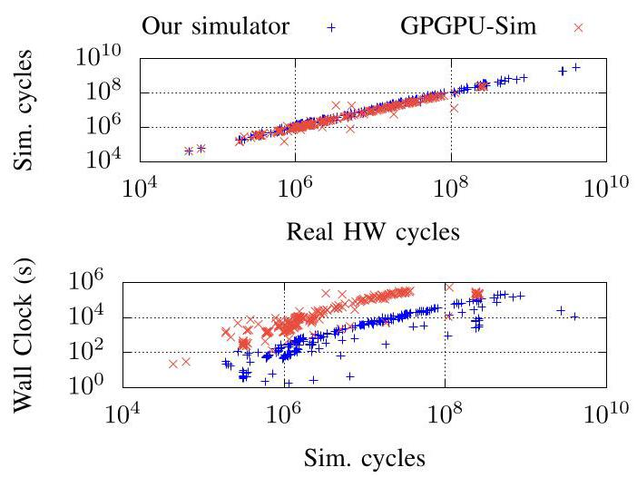
Figure 7: Simulator correlation vs. a NVIDIA Quadro GV100 and simulation runtime for our simulator and GPGPU-Sim [46-49].
图7：模拟器与NVIDIA Quadro GV100的相关性，以及我们的模拟器和GPGPU-Sim [46-49] 的仿真运行时间。
Fig. 7 shows our simulator correlation versus a NVIDIA Quadro-GV100 GPU across a range of targeted microbench-marks, public, and proprietary workloads. Fig. 7 also shows the corresponding data for GPGPU-Sim, a widely-used academic GPU architecture simulator [51], with simulations capped at running for about one week. Our simulator has a correlation coefficient of 0.99 and average absolute error of 0.13 . This compares favorably to GPGPU-Sim (at 0.99 and 0.045 , respectively), as well as other recently reported simulator results [52] while being significantly faster, which allows us to run forward-looking GPU configurations more easily. Our simulator inherits the contiguous CTA scheduling and first-touch page placement polices from prior work [5, 13] to maximize data locality in memory.
图 7 展示了我们的模拟器与 NVIDIA Quadro-GV100 GPU 在一系列目标微基准测试、公开及专有工作负载上的相关性。图 7 也给出了广泛使用的学术 GPU 架构模拟器 GPGPU-Sim [51] 的对应数据，其模拟运行时间上限约为一周。我们的模拟器相关系数 (correlation coefficient) 为 0.99，平均绝对误差 (average absolute error) 为 0.13。这优于 GPGPU-Sim（两者分别为 0.99 和 0.045）以及其他近期报道的模拟器结果 [52]，同时速度显著更快，使我们能更轻松地运行前瞻性的 GPU 配置。我们的模拟器继承了先前工作 [5, 13] 中的连续 CTA (Cooperative Thread Array) 调度和首次接触页放置 (first-touch page placement) 策略，以最大化内存中的数据局部性 (data locality)。
To perform our evaluation, we choose a public subset of workloads (shown in Table III) [29-35] that have sufficient parallelism to fill a 4-GPU system. These benchmarks utilize scoped and/or inter-kernel synchronization patterns. This ensures that performance does not regress on traditional workloads even as we accelerate workloads with more fine-grained sharing. Specifically, cuSolver, namd2.10, and mst use . gpu-scoped synchronization explicitly, others utilize inter-kernel communication by launching frequent dependent kernels, and a few are traditional bulk-synchronous providing a historical comparative baseline.
为了进行评估，我们选取了一组公开的工作负载子集（如表 III 所示）[29–35]，这些工作负载具有足够的并行性来充分利用一个 4-GPU 系统。这些基准测试使用了作用域 (scoped) 和/或内核间 (inter-kernel) 同步模式。这确保了即使在加速具有更细粒度共享的工作负载时，传统工作负载的性能也不会出现倒退。具体来说，cuSolver、namd2.10 和 mst 显式使用了 .gpu-scoped 同步，其他工作负载通过启动频繁的依赖内核来实现内核间通信，还有少数是传统的批量同步 (bulk-synchronous) 工作负载，作为历史比较基线。
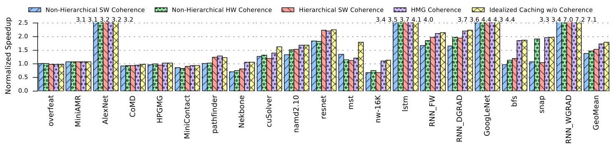
Figure 8: Performance of a 4-GPU system, where each GPU is composed of 4 GPMs. Performance is normalized to a 4-GPU system that disallows caching of remote GPU data. Five configurations are evaluated: software protocols with non-hierarchical and hierarchical implementations, NHCC, HMG, and ideal caching without coherence overhead.
图8：一个4-GPU系统的性能，其中每个GPU由4个GPU处理模块（GPM）组成。性能被归一化到一个禁止缓存远程GPU数据的4-GPU系统。评估了五种配置：采用非分层和分层实现的软件协议、非分层硬件一致性（NHCC）、分层硬件管理一致性（HMG），以及没有一致性开销的理想缓存。
| Benchmark | Abbrev. | Footprint |
| cuSolver | cuSolver | 1.60 GB |
| HPC_CoMD-xyz49 | CoMD | 313 MB |
| HPC_HPGMG | HPGMG | 1.32 GB |
| HPC_MiniAMR-test2 | MiniAMR | 1.80 GB |
| HPC_MiniContact | MiniContact | 246 MB |
| HPC_namd2.10 | namd2.10 | 72 MB |
| HPC_Nekbone-10 | Nekbone | 178 MB |
| HPC_snap | snap | 3.44 GB |
| Lonestar_bfs-road-fla | bfs | 26 MB |
| Lonestar_mst-road-fla | mst | 83 MB |
| ML_AlexNet_conv2 | AlexNet | 812 MB |
| ML_GoogLeNet_conv2 | GoogLeNet | 1.15 GB |
| ML_lstm_layer2 | lstm | 710 MB |
| ML_overfeat_layer1 | overfeat | 618 MB |
| ML_resnet | resnet | 3.20 GB |
| ML_RNN_layer4_DGRAD | RNN_DGRAD | 29 MB |
| ML_RNN_layer4_FW | RNN_FW | 40 MB |
| ML_RNN_layer4_WGRAD | RNN_WGRAD | 38 MB |
| Rodinia_nw-16K-10 | nw-16K | 2.00 GB |
| Rodinia_pathfinder | pathfinder | 1.49 GB |
Table III: Benchmarks used for evaluation.
表 III：用于评估的基准测试。
Coherence Protocol Implementations: This work implements and compares 4 coherence possibilities: a nonhierarchical software protocol (conventional software coherence with scopes and bulk-invalidation of caches), a non-hierarchical hardware protocol (NHCC), a hierarchical software protocol (conventional software coherence with hierarchical extension to leverage scopes), and our proposed hierarchical hardware protocol (HMG). We also compare them to idealized caching that does not enforce coherence; this serves as a loose upper bound for performance that can be achieved via hardware caching. For non-hierarchical protocols, multi-GPU systems like Fig. 1 behaves as a single flat GPU with more GPMs.
一致性协议实现：本文实现并比较了4种一致性方案，包括一种非层次化软件协议（采用作用域和缓存批量无效化的传统软件一致性）、一种非层次化硬件协议（NHCC）、一种层次化软件协议（利用作用域进行层次化扩展的传统软件一致性），以及我们提出的层次化硬件协议（HMG）。我们还将它们与不强制一致性的理想化缓存进行了比较，这为通过硬件缓存可实现的性能提供了一个宽松的上限。对于非层次化协议，像图1所示的多GPU系统的行为类似于一个具有更多通用处理模块（GPMs）的单一平面GPU。
NHCC and HMG behave according to Section IV and V respectively. Load-acquire operations in our software coherence protocols trigger bulk cache invalidations in any caches between the issuing SM and the home node for the scope in question. For example, .gpu-scoped loads will invalidate both the L1 cache of the issuing SM and the GPM-local L2 cache. In the hierarchical protocol, . sys-scoped loads invalidate the L1 cache of the issuing SM and all L2 caches of the issuing GPU. However, in the non-hierarchical protocol, . sys-scoped loads need not to invalidate L2 caches in other GPMs of the same GPU, as subsequent loads will not fetch stale data from those caches. Store-release operations stall subsequent operations until the home node for the scope in question clears all pending writes.
NHCC 和 HMG 的行为分别符合第四节和第五节的描述。在我们的软件一致性协议中，加载-获取操作（load-acquire）会触发在发出流式多处理器（SM）与相关作用域（scope）的主节点（home node）之间任何缓存中的批量缓存无效化（bulk cache invalidations）。例如，.gpu 作用域加载会无效化发出 SM 的 L1 缓存和 GPU 处理模块（GPM）本地的 L2 缓存。在分层协议中，.sys 作用域加载会无效化发出 SM 的 L1 缓存以及发出 GPU 的所有 L2 缓存。然而，在非分层协议中，.sys 作用域加载无需无效化同一 GPU 中其他 GPM 的 L2 缓存，因为后续加载不会从那些缓存中取走过时数据。存储-释放操作（store-release）会暂停后续操作，直到相关作用域的主节点清除所有待处理写操作。
In our evaluation, all caches are write-through. We do not implement the optional sharer downgrade messages. We model one directory optimization: each entry tracks the state of four cache lines together. This enables \({12K} \times 4 \times {128B} = \; {6MB}\) of data assigned to each GPM to be actively shared by other GPMs and/or GPUs. Section VII-B later shows performance sensitivity to the choices of these parameters.
在我们的评估中，所有缓存均采用写通（write-through）策略。我们并未实现可选的共享者降级消息。我们建模了一种目录优化：每个条目同时跟踪四条缓存行的状态。这使得分配给每个 GPM 的 \({12K} \times 4 \times {128B} = \; {6MB}\) 数据可被其他 GPM 和/或 GPU 主动共享。第 VII-B 节后续将展示性能对这些参数选择的敏感度。
VII. RESULTS AND DISCUSSION
We first compare the performance of HMG to NHCC, software coherence protocols, and idealized caching without any coherence overhead. Then we conduct sensitivity analysis to explore the design space of HMG.
我们首先将硬件管理一致性协议（HMG）的性能与非分层硬件一致性协议（NHCC）、软件一致性协议以及无任何一致性开销的理想化缓存（idealized caching）进行比较。然后，我们进行敏感性分析（sensitivity analysis），以探索 HMG 的设计空间（design space）。
A. Performance Analysis
Single-GPU System: Like prior work, we observe that for most benchmarks, both software and hardware coherence generally perform similarly and close to an idealized noncoherent caching scheme. The relatively small L2 caches and relatively large inter-GPM bandwidths can minimize the performance penalty of cache invalidations in single-GPU systems, and hence we do not elaborate on them further here.
单GPU系统：与先前工作类似，我们观察到对于大多数基准测试，软件和硬件一致性通常表现相似，且接近理想化的非一致缓存方案。相对较小的L2缓存和相对较大的GPU模块（GPM）间带宽可以最小化单GPU系统中缓存失效带来的性能损失，因此我们在此不再进一步详述。
Multi-GPU System: While software coherence may be sufficient within individual GPUs, even for benchmarks with fine-grained thread-to-thread communication, Fig. 8 shows that the benefits of HMG are much more pronounced in deeply hierarchical multi-GPU systems, especially for the applications which have more fine-grained data sharing (i.e, the right half side). In a 4-GPU system, HMG generally outperforms both software coherence protocols and NHCC. Both software and hardware hierarchical protocols significantly benefit from the additional intra-GPU data locality. Meanwhile, the non-hierarchical protocols suffer from larger inter-GPU latency and bandwidth penalties.
多GPU系统：虽然在单个GPU内部，即使对于具有细粒度线程间通信的基准测试，软件一致性（software coherence）可能已足够，但图8显示，在深度层次化的多GPU系统中，HMG的优势更为显著，尤其是对于具有更多细粒度数据共享的应用（即右半部分）。在4-GPU系统中，HMG通常优于软件一致性协议和NHCC。软件和硬件层次化协议都显著受益于额外的GPU内部数据局部性（intra-GPU data locality）。与此同时，非层次化协议则承受更大的GPU间延迟和带宽惩罚。
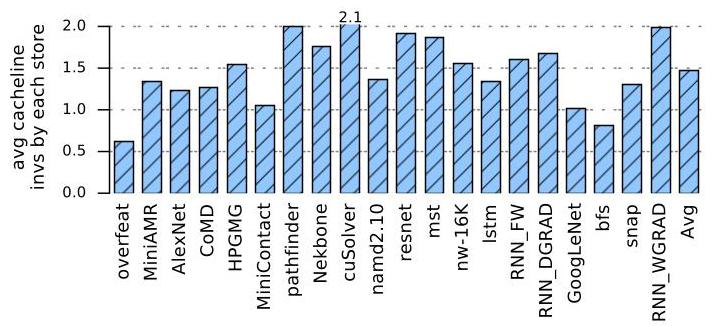
Figure 9: Average number of cache lines invalidated by each store request on shared data.
图 9：共享数据上每个存储请求（store request）平均导致失效的缓存行（cache line）数量。
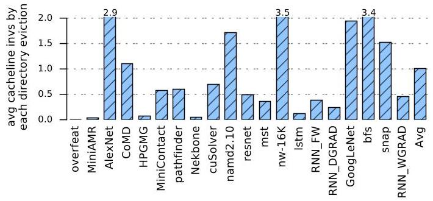
Figure 10: Average number of cache lines invalidated by each coherence directory eviction.
图10：每次一致性目录驱逐所失效的缓存行平均数量
Fig. 9 and 10 show that cache line invalidations due to store instructions or coherence directory evictions do not have a significant impact on performance of HMG. This is because stores only trigger invalidations if there is a sharer for the same address and typically only a small percentage of the memory footprint of each workload contains read-write shared data. Even among stores or directory evictions that do trigger sharer invalidations, there are generally no more than two sharers in our workloads. These observations highlight the benefit of tracking sharers dynamically, rather than e.g., classifying data sharing type alone [14].
图 9 和图 10 表明，由存储指令或一致性目录驱逐导致的缓存行失效对 HMG 性能没有显著影响。这是因为存储指令仅在同一地址存在共享者时才会触发失效，而且通常每个工作负载的内存占用中只有很小一部分包含读写共享数据。即使在确实触发共享者失效的存储指令或目录驱逐中，我们的工作负载中一般也不超过两个共享者。这些发现凸显了动态追踪共享者（tracking sharers dynamically）的益处，而非仅进行数据共享类型分类（classifying data sharing type alone）[14]。
Graph workloads' fine-grained, often conflicting access patterns can lead to false sharing. Store operations in software coherence protocols will simply write this data through, but HMG might trigger frequent invalidations (in these experiments, at the granularity of four cache lines per directory entry), depending on the input sets. In such cases, the hardware protocol HMG will have higher overhead. This explains the performance of mst, for example. For most other applications, the benefits of HMG outweigh the costs.
图工作负载的细粒度（fine-grained）、经常冲突的访问模式可能导致伪共享（false sharing）。软件一致性协议（software coherence protocols）中的存储操作（store operations）会简单地将该数据直写（write through），但HMG可能触发频繁的无效化（invalidations），具体取决于输入集（在本实验中，每个目录条目对应四个缓存行的粒度）。在这种情况下，硬件协议HMG将产生更高的开销。例如，这解释了mst的性能表现。对于大多数其他应用，HMG的利大于弊。
We also profile the bandwidth overhead of invalidation messages. Fig. 11 shows that the total bandwidth cost of invalidation messages is generally as low as just a few gigabytes per second. This is consistent with prior data since there is little read-write sharing and a low number of sharers when invalidations must be sent out. The size of each invalidation message is also relatively small compared to a GPU cache line. Combined with the fact that GPU workloads are generally latency tolerant, it becomes clear that HMG for hierarchical multi-GPUs can deliver high performance, at high efficiency, with relatively simple hardware implementation. Overall, our results confirm prior suggestions that complicated CPU-like coherence protocols are unnecessary, even in hierarchical multi-GPU contexts. By providing a lightweight coherence enforcement mechanism specifically tuned to the scoped memory model, HMG is able to deliver 97% of the ideal speedup that inter-GPU caching can possibly enable.
我们还对失效消息的带宽开销进行了分析。图11显示，失效消息的总带宽成本通常低至每秒仅几个吉字节。这与先前数据一致，因为当需要发送失效消息时，读写共享很少且共享者数量不多。每条失效消息的大小相对于GPU缓存行也较小。结合GPU工作负载通常具有延迟容忍特性这一事实，可以清楚地看到，用于层次化多GPU系统的HMG能够以相对简单的硬件实现提供高性能和高效率。总体而言，我们的结果证实了先前的观点，即即使在层次化多GPU环境中，也不必要采用类似CPU的复杂一致性协议。通过提供一种专为作用域内存模型（scoped memory model）定制的轻量级一致性强制机制，HMG能够达到GPU间缓存可能实现的理想加速比的97%。
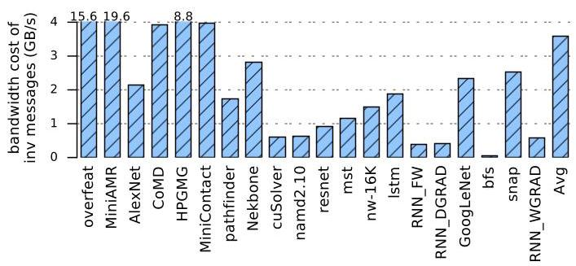
Figure 11: Total bandwidth cost of invalidation messages.
图11：失效消息的总带宽开销
B. Sensitivity Analysis
To understand the relationship between our architectural parameters and the performance of HMG, we performed sensitivity studies across a range of design space parameters.
为了理解我们的架构参数（architectural parameters）与 HMG 的性能（performance）之间的关系，我们对一系列设计空间参数（design space parameters）进行了敏感性研究（sensitivity studies）。
- Bandwidth-limited inter-GPU links are the main cause of NUMA effects that often bottleneck multi-GPU performance. Fig. 12 shows that when sweeping across inter-GPU bandwidths, HMG is always the best performing coherence option, even when absolute performance begins to saturate due to sufficient inter-GPU bandwidth.
- 带宽受限的 GPU 间互连 (bandwidth-limited inter-GPU links) 是导致 NUMA 效应 (NUMA effects) 的主要原因，而该效应往往成为多 GPU 性能的瓶颈。图 12 显示，当扫描不同 GPU 间带宽时，HMG 始终是性能最优的缓存一致性选项，即使在 GPU 间带宽充足导致绝对性能开始饱和的情况下亦然。
- The impact of L2 cache size on performance is shown in Fig. 13. Because of the overhead of cache invalidation, the benefits of increased L2 capacity are restricted by software coherence protocols. Conversely, the performance of HMG increases as capacity grows, indicating the advantage of HMG will only become more favorable in systems with larger caches.
- L2 缓存大小对性能的影响如图13所示。由于缓存失效（cache invalidation）的开销，软件一致性协议（software coherence protocols）限制了L2容量增加所带来的收益。相反，HMG的性能随着容量增长而提升，这表明在配备更大缓存的系统中，HMG的优势只会变得更加显著。
- Coherence directory sizing presents a trade-off between power/area and coverage/performance. As Fig. 14 shows, the performance of our proposed HMG is somewhat sensitive to directory size. The benefit of hardware-managed coherence over software coherence shrinks if the directory is not able to track enough sharers and is forced to perform additional cache invalidations across GPUs. However, our modestly-sized directories are large enough to successfully capture the locality needed to deliver near-ideal caching performance.
- 一致性目录的容量设计需要在功耗/面积与覆盖率/性能之间进行权衡。如图14所示，我们提出的硬件管理缓存一致性协议 (HMG) 的性能对目录大小有一定程度的敏感性。如果目录无法跟踪足够多的共享者，而被迫在GPU之间执行额外的缓存失效，那么硬件管理的一致性相比软件一致性的优势就会缩小。然而，我们大小适中的目录足以成功捕获所需的局部性，从而提供接近理想的缓存性能。
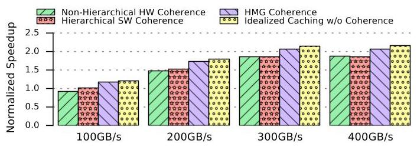
Figure 12: Performance sensitivity to inter-GPU bandwidth (baseline is no caching with configurations of Table II).
图12: 对 GPU 间带宽（inter-GPU bandwidth）的性能敏感性（基准为无缓存，采用表 II 的配置）
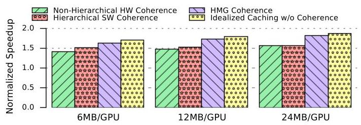
Figure 13: Performance sensitivity to L2 cache size (baseline is no caching with configurations of Table II).
图13：对二级缓存 (L2 cache) 大小的性能敏感性（基线 (baseline) 为无缓存，配置见表II）。
- Coarse-grained directory entry tracking granularity (e.g., where each entry tracks four cache lines at a time) allows directories to be made smaller, but it also introduces a risk of false sharing. In order to quantify this impact, we varied the granularity tracked by each directory entry while simultaneously adjusting the total number of entries in order to keep the total coverage constant. The results (not pictured) showed minimal sensitivity, and we therefore conclude that coarse-grained directory tracking is a useful optimization for HMG.
- 粗粒度的目录条目跟踪粒度（coarse-grained directory entry tracking granularity，例如每个条目同时跟踪四个缓存行）使得目录可以变得更小，但也引入了伪共享（false sharing）的风险。为了量化这种影响，我们在保持总覆盖范围不变的情况下，改变每个目录条目跟踪的粒度，同时调整条目总数。结果（未展示）显示敏感性极小，因此我们得出结论：粗粒度目录跟踪（coarse-grained directory tracking）是 HMG 的一项有用优化。
C. Hardware Costs
In our HMG implementation, each directory entry needs to track as many as six sharers: three GPMs in the same GPU and three other GPUs. Therefore, a 6 bit vector is required for the sharer list. Because our protocol uses just two states, Valid and Invalid, only one bit is needed to track directory entry state. We assume 48 bits for tag addresses, so each entry in the coherence directory requires 55 bits of storage. Every GPM has \({12}\mathrm{\;K}\) directory entries, so the total storage cost of the coherence directories is \({84}\mathrm{\;{KB}}\) , which is only 2.7% of each GPM's L2 cache data capacity, a small price to pay for large performance improvements in future multi-GPUs.
在我们的 HMG 实现中，每个目录项最多需要跟踪六个共享者：同一 GPU 内的三个 GPU 模块 (GPM) 以及另外三个 GPU。因此，共享者列表需要一个 6 位的位向量。由于我们的协议仅使用两种状态——有效 (Valid) 和无效 (Invalid)，因此只需要一位来跟踪目录项的状态。我们假设标签地址为 48 位，所以一致性目录中的每个条目需要 55 位的存储空间。每个 GPM 有 \({12}\mathrm{\;K}\) 个目录项，因此一致性目录的总存储开销为 \({84}\mathrm{\;{KB}}\)，这仅占每个 GPM 的 L2 缓存数据容量的 2.7%，对于未来多 GPU 系统中的大幅性能提升而言，这是一个很小的代价。
D. Discussion
On-package integration \(\left\lbrack {5,{12},{53}}\right\rbrack\) along with off-package integration technologies [6-8] enable more and more GPU modules to be integrated in a single systems. However, NUMA effects are exacerbated as the number of GPMs, GPUs, and non-uniform topologies increase within the system. In these situations, HMG's coherence directory would need to record more sharers and cover a larger footprint of shared data, but the system performance will likely be more sensitive to the link speeds and the actual network topology. As shown in Fig. 14, HMG can perform very well even after we reduce the coherence directory size by \({50}\%\) , showing that there is still room to scale HMG to larger systems. We envision our proposed coherence protocol being applicable for systems that can be comprised by a single NVSwitch-based network within a single operating system node. Systems significantly larger than this (e.g., 1024-GPU systems) may be decomposed into a hierarchy consisting of hardware-coherent GPU-clusters which are in turn share data using software mechanisms such as MPI or SHMEM [54, 55].
片上封装集成（on-package integration）\(\left\lbrack {5,{12},{53}}\right\rbrack\) 与片外封装集成（off-package integration）技术 [6-8] 使越来越多的 GPU 模块能够被集成到单个系统中。然而，随着系统中 GPM（GPU 模块，GPU Processing Module）、GPU 以及非均匀拓扑数量的增加，NUMA（非统一内存访问，Non-Uniform Memory Access）效应愈发加剧。在这些情形下，HMG 的缓存一致性目录将需要记录更多的共享者（sharer），并覆盖更大的共享数据足迹，但系统性能很可能对链路速度和实际网络拓扑更加敏感。如图 14 所示，即便我们将一致性目录大小缩减 \({50}\%\)，HMG 依然能表现良好，这表明仍有空间将 HMG 扩展到更大规模系统。我们设想所提出的一致性协议可适用于基于单一 NVSwitch 网络且位于同一操作系统节点内的系统。规模显著更大的系统（例如 1024-GPU 系统）则可分解为包含多个硬件一致 GPU 集群的层次结构，而这些集群之间再通过诸如 MPI 或 SHMEM 等软件机制共享数据 [54, 55]。
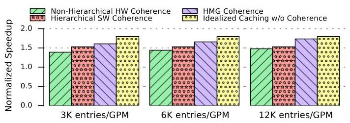
Figure 14: Performance sensitivity to the coherence directory size (baseline is no caching with configurations of Table II).
图14：性能对一致性目录大小的敏感性（基线为使用表II配置的无缓存情况）
The rise of MCM-GPU-like architectures might seem to motivate adding scopes in between .cta and .gpu, to minimize the negative effects of coherence. However, our single-GPU performance results indicate that our workloads are minimally sensitive to the inter-GPM coherence mechanism due to high inter-GPM bandwidth. As a result, the performance benefits of introducing a new . gpm scope may not outweigh the added programmer burden of using numerous scopes. We expect further exploration of other software-hardware coherence interactions to remain an active area of research as GPU systems continue to grow in size.
类似MCM的GPU架构的兴起，可能看似促使人们在.cta和.gpu之间增添作用域（scope），以尽量减轻一致性的负面影响。然而，我们的单GPU性能结果表明，由于GPM间带宽较高，我们的工作负载对GPM间一致性机制几乎不敏感。因此，引入新的.gpm作用域（.gpm scope）所带来的性能收益，或许并不足以抵消使用众多作用域给程序员增添的负担。我们预期，随着GPU系统规模持续扩大，对其他软硬件一致性交互的进一步探索仍将是一个活跃的研究领域。
VIII. RELATED WORK
Memory Consistency: Some previous work enforced sequential consistency (SC) in GPUs [27, 56, 57]. They found that TSO and relaxed memory models could not significantly outperform SC. However, modern GPU products still enforce relaxed memory models, as weak models allow for more microarchitectural flexibility and arguably better performance/power/area tradeoffs.
内存一致性：一些先前的工作在 GPU 中强制执行顺序一致性（sequential consistency, SC）[27, 56, 57]。他们发现，完全存储定序（TSO）和宽松内存模型无法显著超越 SC。然而，现代 GPU 产品仍然采用宽松内存模型，因为弱模型允许更大的微架构灵活性，并且可能在性能、功耗和面积之间取得更好的权衡。
Cache Coherence: We have discussed most of the existing GPU coherence protocols in Section II-D. Others have also proposed GPU coherence based on physical or logical timestamps [15, 27]. Without explicit invalidation messages, cache lines are self-invalidated after timestamps are expired, so they can reduce traffic load and improve performance efficiently. However, they considered neither architecture hierarchy nor scoped memory model. In this paper, we explore the coherence support for future deeply hierarchical GPU systems with scoped memory model enforcement.
缓存一致性：我们在第 II-D 节中已讨论了现有的大部分 GPU 一致性协议。其他研究还提出了基于物理或逻辑时间戳的 GPU 一致性方案 [15, 27]。这些方案无需显式的失效消息，缓存行在时间戳到期后会自我失效（self-invalidate），因此能够有效降低流量负载并提升性能。然而，这些工作既未考虑架构层次（architecture hierarchy），也未考虑作用域内存模型（scoped memory model）。本文旨在探索面向未来深度层次化 GPU 系统、并强制执行作用域内存模型的一致性支持。
Coherence hierarchy has been commonly employed in CPUs [58,59]. Most hierarchical CPU designs [40-42,44,60] have adopted MESI-like coherence, which has been proven to be a poor fit for GPUs [15, 25]. HMG shows that the complexity of extra states is also unnecessary for hierarchical GPUs. Both DASH [41] and WildFire [44] increased the complexity even more by employing the mixed coherence policy: intra-cluster snoopy coherence and inter-cluster directory-based coherence. To implement consistency model efficiently, Alpha GS320 [60] separated the commit events to allow time-critical replies to bypass inbound requests without violating memory order constraints. HMG can achieve almost optimal performance without such overheads.
一致性层次结构 (coherence hierarchy) 在 CPU 中已被普遍采用 [58,59]。大多数层次化 CPU 设计 [40-42,44,60] 都采用了 MESI 类一致性协议，但已被证明并不适合 GPU [15, 25]。HMG 表明，额外状态带来的复杂性对于层次化 GPU 而言也是不必要的。DASH [41] 和 WildFire [44] 甚至采用了混合一致性策略——簇内嗅探一致性 (snoopy coherence) 和簇间基于目录的一致性 (directory-based coherence)，进一步增加了复杂度。为高效实现一致性模型 (consistency model)，Alpha GS320 [60] 对提交事件 (commit events) 进行了分离，使得时间关键型回复 (time-critical replies) 能够绕过入站请求，而不会违反内存顺序约束 (memory order constraints)。HMG 无需此类开销即可实现近乎最优的性能。
Shared data synchronization in the unified memory space of heterogeneous systems also requires efficient coherence protocols [61-63]. We expect that HMG would be integrated nicely with such schemes due to its simple states and clear coherence hierarchy.
在异构系统的统一内存空间中，共享数据同步也需要高效的缓存一致性协议（coherence protocols）[61-63]。我们预期，HMG 因其简单的状态和清晰的缓存一致性层次，将能与这类方案良好集成。
GPU Scaling: As Section II-A described, previous work built larger GPU systems with distributed architectures [5, 13, 14]. They alleviated the NUMA effect with aggressive caching, which correctness is enforced with either conventional software or hardware coherence without recording exact sharers. However, none of them targeted deeply hierarchical systems and scoped memory models.
GPU 扩展 (GPU Scaling)：如第 II-A 节所述，先前的工作构建了具有分布式架构的更大 GPU 系统 [5, 13, 14]。它们通过激进缓存 (aggressive caching) 缓解了非一致内存访问效应 (NUMA effect)，其正确性由传统软件或硬件一致性 (conventional software or hardware coherence) 强制实现，但不记录精确共享者 (exact sharers)。然而，没有一项工作针对深度分层系统 (deeply hierarchical systems) 和作用域内存模型 (scoped memory models)。
IX. CONCLUSION
In this paper, we introduce HMG, a novel cache coherence protocol specifically tailored to scale well to hierarchical multi-GPU systems. HMG provides efficient support for fine-grained synchronization now permitted under recently-formalized scoped GPU memory models. We find that, without much complexity, simple hierarchical extensions and optimizations to existing coherence protocols can take advantage of relaxations now permitted in scoped memory models to achieve \({97}\%\) performance of an ideal caching scheme that has no coherence overhead. Thanks to its cheap hardware implementation and high performance, HMG demonstrates the most practical solution available for extending cache coherence to future hierarchical multi-GPU systems, and thereby for enabling continued performance scaling of applications onto larger and larger GPU-based systems.
本文提出了 HMG，一种新颖的缓存一致性协议（cache coherence protocol），专为良好扩展至分层多 GPU 系统（hierarchical multi-GPU systems）而定制。HMG 为近期形式化的作用域 GPU 内存模型（scoped GPU memory models）所允许的细粒度同步（fine-grained synchronization）提供了高效支持。我们发现，无需过多复杂性，对现有一致性协议的简单分层扩展与优化即可利用作用域内存模型中允许的松弛，达到无一致性开销（coherence overhead）的理想缓存方案（ideal caching scheme）性能的 \({97}\%\)。得益于其廉价的硬件实现与高性能，HMG 展示了将缓存一致性扩展至未来分层多 GPU 系统的最实用解决方案，从而使应用程序能够持续性能扩展至越来越庞大的 GPU 系统。
X. ACKNOWLEDGMENT
We are grateful to Mieszko Lis, and the anonymous reviewers for their insightful feedback.
我们感谢 Mieszko Lis 以及匿名审稿人提供的深刻反馈。
REFERENCES
[1] Inside HPC, "TOP500 Shows Growing Momentum for Accelerators," https://insidehpc.com/2015/11/top500-shows-growing-momentum-for-accelerators/, 2015, accessed on 2019-08-04.
[1] Inside HPC，《TOP500 Shows Growing Momentum for Accelerators》（TOP500 显示加速器发展势头强劲），https://insidehpc.com/2015/11/top500-shows-growing-momentum-for-accelerators/，2015 年，访问日期：2019 年 8 月 4 日。
[2] S. Chetlur, C. Woolley, P. Vandermersch, J. Cohen, J. Tran, B. Catanzaro, and E. Shelhamer, "cuDNN: Efficient Primitives for Deep Learning," CoRR, vol. abs/1410.0759, October 2014. [Online]. Available: http://arxiv.org/abs/1410.0759
[2] S. Chetlur, C. Woolley, P. Vandermersch, J. Cohen, J. Tran, B. Catanzaro, and E. Shelhamer, “cuDNN: 深度学习的高效原语 (Efficient Primitives for Deep Learning),” CoRR, vol. abs/1410.0759, 2014年10月. [在线]. 可用: http://arxiv.org/abs/1410.0759
[3] K. Simonyan and A. Zisserman, "Very Deep Convolutional Networks for Large-Scale Image Recognition," CoRR, vol. abs/1409.1556, September 2014. [Online]. Available: http://arxiv.org/abs/1409.1556
[3] K. Simonyan 和 A. Zisserman，“用于大规模图像识别的非常深卷积网络（Very Deep Convolutional Networks for Large-Scale Image Recognition）”，计算研究知识库（CoRR），卷 abs/1409.1556，2014 年 9 月。[在线]。可获取：http://arxiv.org/abs/1409.1556
[4] P. Harish and P. Narayanan, "Accelerating Large Graph Algorithms on the GPU Using CUDA," in International conference on high-performance computing (HiPC). Springer, 2007, pp. 197-208.
[4] P. Harish 和 P. Narayanan，“在 GPU 上使用 CUDA 加速大型图算法（Accelerating Large Graph Algorithms on the GPU Using CUDA）”，载于国际高性能计算会议（International conference on high-performance computing, HiPC）。Springer，2007，第 197–208 页。
[5] A. Arunkumar, E. Bolotin, B. Cho, U. Milic, E. Ebrahimi, O. Villa, A. Jaleel, C.-J. Wu, and D. Nellans, "MCM-GPU: Multi-Chip-Module GPUs for Continued Performance Scala-bility," in Proceedings of the 44th International Symposium on Computer Architecture (ISCA). ACM, 2017, pp. 320-332.
[5] A. Arunkumar, E. Bolotin, B. Cho, U. Milic, E. Ebrahimi, O. Villa, A. Jaleel, C.-J. Wu 和 D. Nellans, “MCM-GPU: 面向持续性能扩展的多芯片模块GPU (MCM-GPU: Multi-Chip-Module GPUs for Continued Performance Scalability),” 收录于《第44届计算机体系结构国际研讨会 (ISCA) 会议论文集》。ACM, 2017, 第320-332页。
[6] NVIDIA, "NVIDIA NVLink: High Speed GPU Interconnect," https://www.nvidia.com/en-us/design-visualization/ nvlink-bridges/, accessed on 2019-08-04.
[6] NVIDIA, “NVIDIA NVLink：高速 GPU 互连（High Speed GPU Interconnect）,” https://www.nvidia.com/en-us/design-visualization/ nvlink-bridges/, 访问于 2019-08-04.
[7] NVIDIA, "NVIDIA NVSwitch: The World's Highest-Bandwidth On-Node Switch," https://images.nvidia.com/ content/pdf/nvswitch-technical-overview.pdf, accessed on 2019-08-04.
[7] NVIDIA，“NVIDIA NVSwitch：全球最高带宽的节点内交换机（On-Node Switch）”，https://images.nvidia.com/content/pdf/nvswitch-technical-overview.pdf，访问于2019-08-04。
[8] "AMD's answer to Nvidia's NVLink is xGMI, and it's coming to the new 7nm Vega GPU," https://www.pcgamesn.com/amd-xgmi-vega-20-gpu-nvidia-nvlink, accessed on 2019-08-04.
[8] “AMD 对 Nvidia NVLink 的回应是 xGMI，它将搭载于新的 7nm Vega GPU，” https://www.pcgamesn.com/amd-xgmi-vega-20-gpu-nvidia-nvlink，访问日期：2019-08-04。
[9] NVIDIA, "NVIDIA DGX-1: Essential Instrument for AI Research," https://www.nvidia.com/en-us/data-center/dgx-1/, 2017, accessed on 2019-08-04.
[9] NVIDIA，《NVIDIA DGX-1：人工智能研究的关键工具》，https://www.nvidia.com/en-us/data-center/dgx-1/，2017年，访问日期2019年8月4日。
[10] —, "NVIDIA DGX-2: The world's most powerful AI system for the most complex AI challenges," https://www.nvidia.com/ en-us/data-center/dgx-2/, 2018, accessed on 2019-08-04.
[10] —, “NVIDIA DGX-2: 世界上最强大的人工智能系统，用于应对最复杂的 AI 挑战,” https://www.nvidia.com/ en-us/data-center/dgx-2/, 2018, 于 2019-08-04 访问.
[11] —, "NVIDIA HGX-2: Powered by NVIDIA Tesla V100 GPUs and NVSwitch," https://www.nvidia.com/en-us/data-center/hgx/, 2018, accessed on 2019-08-04.
[11] ——, “NVIDIA HGX-2：搭载 NVIDIA Tesla V100 GPU 和 NVSwitch，” https://www.nvidia.com/en-us/data-center/hgx/, 2018, 访问于 2019-08-04。
[12] J. W. Poulton, W. J. Dally, X. Chen, J. G. Eyles, T. H. Greer, S. G. Tell, J. M. Wilson, and C. T. Gray, "A 0.54 pJ/b 20 Gb/s Ground-Referenced Single-Ended Short-Reach Serial Link in 28 nm CMOS for Advanced Packaging Applications," IEEE Journal of Solid-State Circuits (JSSC), vol. 48, no. 12, pp. 3206-3218, 2013.
[12] J. W. Poulton、W. J. Dally、X. Chen、J. G. Eyles、T. H. Greer、S. G. Tell、J. M. Wilson 与 C. T. Gray，“一种面向先进封装应用、采用 28 纳米 CMOS 工艺的 0.54 pJ/b 20 Gb/s 地参考单端短距串行链路（A 0.54 pJ/b 20 Gb/s Ground-Referenced Single-Ended Short-Reach Serial Link in 28 nm CMOS for Advanced Packaging Applications），”《IEEE 固态电路期刊 (IEEE Journal of Solid-State Circuits, JSSC)》，第 48 卷，第 12 期，第 3206–3218 页，2013 年。
[13] U. Milic, O. Villa, E. Bolotin, A. Arunkumar, E. Ebrahimi, A. Jaleel, A. Ramirez, and D. Nellans, "Beyond the Socket: NUMA-aware GPUs," in Proceedings of the 50th International Symposium on Microarchitecture (MICRO). ACM, 2017, pp. 123-135.
[13] U. Milic, O. Villa, E. Bolotin, A. Arunkumar, E. Ebrahimi, A. Jaleel, A. Ramirez, 和 D. Nellans, “超越插槽：NUMA 感知型 GPU（Beyond the Socket: NUMA-aware GPUs）”，载于《第 50 届微架构国际研讨会（MICRO）会议论文集》，ACM，2017 年，第 123-135 页。
[14] V. Young, A. Jaleel, E. Bolotin, E. Ebrahimi, D. Nellans, and O. Villa, "Combining HW/SW Mechanisms to Improve NUMA Performance of Multi-GPU Systems," in Proceedings of the 51th International Symposium on Microarchitecture (MICRO). IEEE, 2018, pp. 339-351.
[14] V. Young, A. Jaleel, E. Bolotin, E. Ebrahimi, D. Nellans 和 O. Villa, “结合软硬件机制以提升多GPU系统NUMA性能（Combining HW/SW Mechanisms to Improve NUMA Performance of Multi-GPU Systems）,” 收录于第51届微架构国际研讨会论文集（Proceedings of the 51th International Symposium on Microarchitecture, MICRO）. IEEE, 2018, 第339-351页.
[15] I. Singh, A. Shriraman, W. W. Fung, M. O'Connor, and T. M. Aamodt, "Cache Coherence for GPU Architectures," in Proceedings of the 19th International Symposium on High Performance Computer Architecture (HPCA). IEEE, 2013, pp. 578-590.
[15] I. Singh, A. Shriraman, W. W. Fung, M. O'Connor, and T. M. Aamodt, “Cache Coherence for GPU Architectures,” 载于第19届国际高性能计算机架构 (High Performance Computer Architecture) 研讨会 (HPCA) 论文集. IEEE, 2013, pp. 578-590.
[16] M. D. Sinclair, J. Alsop, and S. V. Adve, "Efficient GPU Synchronization Without Scopes: Saying No to Complex Consistency Models," in Proceedings of the 48th International Symposium on Microarchitecture (MICRO). ACM, 2015, pp. 647-659.
[16] M. D. Sinclair, J. Alsop 和 S. V. Adve, “高效无作用域的 GPU 同步：对复杂一致性模型说不，” 载于第 48 届国际微架构研讨会 (MICRO) 论文集. ACM, 2015, 第 647-659 页.
[17] M. Burtscher, R. Nasre, and K. Pingali, "A Quantitative Study of Irregular Programs on GPUs," in International Symposium on Workload Characterization (IISWC). IEEE, 2012, pp. 141-151.
[17] M. Burtscher, R. Nasre 和 K. Pingali, “GPU上不规则程序的定量研究 (A Quantitative Study of Irregular Programs on GPUs),” 见 国际工作负载表征研讨会 (International Symposium on Workload Characterization, IISWC). IEEE, 2012, pp. 141-151.
[18] J. Kim and C. Batten, "Accelerating Irregular Algorithms on GPGPUs Using Fine-Grain Hardware Worklists," in Proceedings of the 47th International Symposium on Microarchitecture (MICRO). IEEE, 2014, pp. 75-87.
[18] J. Kim 和 C. Batten，“利用细粒度硬件工作列表加速 GPGPU 上的不规则算法（Accelerating Irregular Algorithms on GPGPUs Using Fine-Grain Hardware Worklists）”，收录于第 47 届国际微架构研讨会 (MICRO) 论文集，IEEE，2014 年，第 75-87 页。
[19] S. Che, B. M. Beckmann, S. K. Reinhardt, and K. Skadron, "Pannotia: Understanding Irregular GPGPU Graph Applications," in International Symposium on Workload Characterization (IISWC). IEEE, 2013, pp. 185-195.
S. Che, B. M. Beckmann, S. K. Reinhardt 和 K. Skadron, “Pannotia：理解不规则的 GPGPU 图应用 (Understanding Irregular GPGPU Graph Applications),” 载于 IEEE 国际负载特征分析研讨会 (International Symposium on Workload Characterization, IISWC). IEEE, 2013, 页码 185–195.
[20] M. D. Sinclair, J. Alsop, and S. V. Adve, "HeteroSync: A Benchmark Suite for Fine-Grained Synchronization on Tightly Coupled GPUs," in International Symposium on Workload Characterization (IISWC). IEEE, 2017, pp. 239-249.
[20] M. D. Sinclair, J. Alsop, 和 S. V. Adve, “HeteroSync: 一个面向紧耦合GPU上细粒度同步的基准测试套件 (HeteroSync: A Benchmark Suite for Fine-Grained Synchronization on Tightly Coupled GPUs),” 收录于 国际工作负载特征描述研讨会 (International Symposium on Workload Characterization, IISWC). IEEE, 2017, pp. 239-249.
[21] D. Lustig, S. Sahasrabuddhe, and O. Giroux, "A Formal Analysis of the NVIDIA PTX Memory Consistency Model," in Proceedings of the 24th International Conference on Architectural Support for Programming Languages and Operating Systems (ASPLOS). ACM, 2019, pp. 257-270.
[21] D. Lustig, S. Sahasrabuddhe 和 O. Giroux, “NVIDIA PTX 内存一致性模型的形式化分析（A Formal Analysis of the NVIDIA PTX Memory Consistency Model）,” 载于《第 24 届编程语言与操作系统架构支持国际会议（ASPLOS）论文集》，美国计算机协会（ACM），2019 年，第 257–270 页。
[22] "HSA Platform System Architecture Specification Version 1.2," http://www.hsafoundation.com/?ddownload=5702, accessed on 2019-07-07.
[22] “HSA 平台系统架构规范 1.2 版（HSA Platform System Architecture Specification Version 1.2），” http://www.hsafoundation.com/?ddownload=5702，访问于 2019-07-07。
[23] "The OpenCL Specification Version 2.2," https://www.khronos.org/registry/OpenCL/specs/2.2/pdf/OpenCL_API.pdf, accessed on 2019-07-07.
[23] 《OpenCL 规范 2.2 版》，https://www.khronos.org/registry/OpenCL/specs/2.2/pdf/OpenCL_API.pdf，访问日期：2019年7月7日。
[24] D. R. Hower, B. A. Hechtman, B. M. Beckmann, B. R. Gaster, M. D. Hill, S. K. Reinhardt, and D. A. Wood, "Heterogeneous-Race-Free Memory Models," in Proceedings of the 19th International Conference on Architectural Support for Programming Languages and Operating Systems (ASPLOS). ACM, 2014, pp. 427-440.
[24] D. R. Hower、B. A. Hechtman、B. M. Beckmann、B. R. Gaster、M. D. Hill、S. K. Reinhardt 和 D. A. Wood，“异构无竞争内存模型（Heterogeneous-Race-Free Memory Models）”，载于《第19届编程语言和操作系统架构支持国际会议论文集（ASPLOS）》。ACM，2014年，第427–440页。
[25] B. A. Hechtman, S. Che, D. R. Hower, Y. Tian, B. M. Beckmann, M. D. Hill, S. K. Reinhardt, and D. A. Wood, "QuickRelease: A Throughput-oriented Approach to Release Consistency on GPUs," in Proceedings of the 20th International Symposium on High Performance Computer Architecture (HPCA). IEEE, 2014, pp. 189-200.
[25] B. A. Hechtman, S. Che, D. R. Hower, Y. Tian, B. M. Beckmann, M. D. Hill, S. K. Reinhardt 与 D. A. Wood，“QuickRelease：一种面向吞吐率的 GPU 释放一致性方法（QuickRelease: A Throughput-oriented Approach to Release Consistency on GPUs）”，收录于《第 20 届国际高性能计算机体系结构研讨会（HPCA）论文集》。IEEE，2014 年，第 189–200 页。
[26] J. Alsop, M. S. Orr, B. M. Beckmann, and D. A. Wood, "Lazy Release Consistency for GPUs," in Proceedings of the 49th International Symposium on Microarchitecture (MICRO). IEEE, 2016, p. 26.
[26] J. Alsop, M. S. Orr, B. M. Beckmann, and D. A. Wood, “GPU的惰性释放一致性 (Lazy Release Consistency for GPUs),” 见《第49届国际微架构研讨会论文集》(Proceedings of the 49th International Symposium on Microarchitecture (MICRO)), IEEE, 2016, p. 26.
[27] X. Ren and M. Lis, "Efficient Sequential Consistency in GPUs via Relativistic Cache Coherence," in Proceedings of the 23rd International Symposium on High Performance Computer Architecture (HPCA). IEEE, 2017, pp. 625-636.
[27] X. Ren 和 M. Lis，“通过相对论缓存一致性实现 GPU 中的高效顺序一致性”，见第 23 届高性能计算机架构国际研讨会 (HPCA) 论文集。IEEE，2017 年，第 625-636 页。
[28] W. J. Dally, C. T. Gray, J. Poulton, B. Khailany, J. Wilson, and L. Dennison, "Hardware-Enabled Artificial Intelligence," in Symposium on VLSI Circuits. IEEE, 2018, pp. 3-6.
[28] W. J. Dally, C. T. Gray, J. Poulton, B. Khailany, J. Wilson, 和 L. Dennison, “硬件支持的人工智能（Hardware-Enabled Artificial Intelligence）,” 载于 Symposium on VLSI Circuits. IEEE, 2018, 第 3-6 页。
[29] L. Chien, "How to Avoid Global Synchronization by Domino Scheme," NVIDIA GPU Technology Conference (GTC), 2014.
[29] L. Chien，《如何通过多米诺方案（Domino Scheme）避免全局同步》，NVIDIA GPU 技术大会（GTC），2014。
[30] M. Kulkarni, M. Burtscher, C. Casçaval, and K. Pingali, "LoneStar: A Suite of Parallel Irregular Programs," in International Symposium on Performance Analysis of Systems and Software (ISPASS). IEEE, 2009, pp. 65-76.
[30] M. Kulkarni、M. Burtscher、C. Casçaval 和 K. Pingali，“LoneStar：一套并行不规则程序 (LoneStar: A Suite of Parallel Irregular Programs),” 载于《系统与软件性能分析国际研讨会 (International Symposium on Performance Analysis of Systems and Software, ISPASS)》。IEEE，2009 年，第 65-76 页。
[31] J. Gong, S. Markidis, E. Laure, M. Otten, P. Fischer, and M. Min, "Nekbone Performance on GPUs with OpenACC and CUDA Fortran Implementations," The Journal of Super-computing, vol. 72, no. 11, pp. 4160-4180, 2016.
[31] J. Gong、S. Markidis、E. Laure、M. Otten、P. Fischer 和 M. Min，《Nekbone在GPU上使用OpenACC和CUDA Fortran实现的性能》，《超级计算杂志》（The Journal of Super-computing），第72卷，第11期，第4160–4180页，2016年。
[32] D. Li and M. Becchi, "Multiple Pairwise Sequence Alignments with the Needleman-Wunsch Algorithm on GPU," in SC Companion: High Performance Computing, Networking, Storage and Analysis (SCC). IEEE, 2012, pp. 1471-1472.
[32] D. Li 和 M. Becchi，“在GPU上使用Needleman-Wunsch算法进行多对序列比对”，载于 SC Companion：高性能计算、网络、存储与分析 (SCC)。IEEE，2012年，第1471-1472页。
[33] S. Che, M. Boyer, J. Meng, D. Tarjan, J. W. Sheaffer, S.- H. Lee, and K. Skadron, "Rodinia: A Benchmark Suite For Heterogeneous Computing," in International Symposium on Workload Characterization (IISWC). IEEE, 2009, pp. 44-54.
[33] S. Che, M. Boyer, J. Meng, D. Tarjan, J. W. Sheaffer, S.- H. Lee, 和 K. Skadron, “Rodinia: 一个面向异构计算的基准测试套件（Rodinia: A Benchmark Suite For Heterogeneous Computing）,” 发表于国际负载特征分析研讨会（International Symposium on Workload Characterization，IISWC）. IEEE, 2009, pp. 44-54.
[34] R. J. Zerr and R. S. Baker, "SNAP: SN (discrete ordinates) Application Proxy Description," Los Alamos National Laboratories, Tech. Rep. LAUR-13-21070, 2013.
[34] R. J. Zerr 和 R. S. Baker，“SNAP：SN（离散纵标法）应用代理描述，”洛斯阿拉莫斯国家实验室，技术报告 LAUR-13-21070，2013 年。
[35] J. C. Phillips, R. Braun, W. Wang, J. Gumbart, E. Tajkhorshid, E. Villa, C. Chipot, R. D. Skeel, L. Kale, and K. Schulten, "Scalable Molecular Dynamics with NAMD," Journal of Computational Chemistry, vol. 26, no. 16, pp. 1781-1802, 2005.
[35] J. C. Phillips, R. Braun, W. Wang, J. Gumbart, E. Tajkhorshid, E. Villa, C. Chipot, R. D. Skeel, L. Kale, 和 K. Schulten，《利用NAMD实现可扩展分子动力学模拟》（Scalable Molecular Dynamics with NAMD），《计算化学杂志》（Journal of Computational Chemistry），第26卷，第16期，第1781-1802页，2005年。
[36] G. Diamos, S. Sengupta, B. Catanzaro, M. Chrzanowski, A. Coates, E. Elsen, J. Engel, A. Hannun, and S. Satheesh, "Persistent RNNs: Stashing Recurrent Weights On-Chip," in International Conference on Machine Learning (ICML), 2016, pp. 2024-2033.
[36] G. Diamos、S. Sengupta、B. Catanzaro、M. Chrzanowski、A. Coates、E. Elsen、J. Engel、A. Hannun 和 S. Satheesh，“持久化 RNN：在片上暂存递归权重 (Persistent RNNs: Stashing Recurrent Weights On-Chip)”，收录于国际机器学习会议 (International Conference on Machine Learning, ICML)，2016 年，第 2024-2033 页。
[37] NVIDIA, "Unified Memory in CUDA 6," https://devblogs.nvidia.com/unified-memory-in-cuda-6/, Nov 2013, accessed on 2019-08-04.
[37] NVIDIA，“CUDA 6中的统一内存（Unified Memory）”，https://devblogs.nvidia.com/unified-memory-in-cuda-6/，2013年11月，访问于2019-08-04。
[38] K. Koukos, A. Ros, E. Hagersten, and S. Kaxiras, "Building Heterogeneous Unified Virtual Memories (UVMs) without the Overhead," ACM Transactions on Architecture and Code Optimization (TACO), vol. 13, no. 1, p. 1, 2016.
[38] K. Koukos, A. Ros, E. Hagersten, 和 S. Kaxiras, “构建无开销的异构统一虚拟内存（Building Heterogeneous Unified Virtual Memories (UVMs) without the Overhead）,”《ACM 架构与代码优化汇刊》（ACM Transactions on Architecture and Code Optimization, TACO），第13卷，第1期，第1页，2016年。
[39] R. Ausavarungnirun, J. Landgraf, V. Miller, S. Ghose, J. Gandhi, C. J. Rossbach, and O. Mutlu, "Mosaic: A GPU Memory Manager with Application-Transparent Support for Multiple Page Sizes," in Proceedings of the 50th International Symposium on Microarchitecture (MICRO). ACM, 2017, pp. 136-150.
[39] R. Ausavarungnirun, J. Landgraf, V. Miller, S. Ghose, J. Gandhi, C. J. Rossbach, and O. Mutlu, “Mosaic: 一种支持多页大小 (Multiple Page Sizes) 且对应用透明 (Application-Transparent) 的 GPU 内存管理器 (GPU Memory Manager),” 载于第 50 届国际微架构研讨会 (International Symposium on Microarchitecture, MICRO) 会议论文集. ACM, 2017, pp. 136-150.
[40] S.-L. Guo, H.-X. Wang, Y.-B. Xue, C.-M. Li, and D.-S. Wang, "Hierarchical Cache Directory for CMP," Journal of Computer Science and Technology, vol. 25, no. 2, pp. 246-256, 2010.
[40] S.-L. Guo, H.-X. Wang, Y.-B. Xue, C.-M. Li, and D.-S. Wang, “面向CMP的分层缓存目录（Hierarchical Cache Directory for CMP），”《计算机科学与技术杂志》（Journal of Computer Science and Technology），第25卷，第2期，第246-256页，2010年。
[41] D. Lenoski, J. Laudon, K. Gharachorloo, A. Gupta, and J. Hennessy, "The Directory-Based Cache Coherence Protocol for the DASH Multiprocessor," in Proceedings of the 17th International Symposium on Computer Architecture (ISCA). IEEE, 1990, pp. 148-159.
[41] D. Lenoski、J. Laudon、K. Gharachorloo、A. Gupta 和 J. Hennessy，“用于 DASH 多处理器的基于目录的缓存一致性协议（The Directory-Based Cache Coherence Protocol for the DASH Multiprocessor）”，载于第 17 届计算机体系结构国际研讨会（International Symposium on Computer Architecture，ISCA）论文集。IEEE，1990 年，第 148–159 页。
[42] D. Mulnix, "Intel Xeon Processor Scalable Family Technical Overview," https://software.intel.com/en-us/articles/intel-xeon-processor-scalable-family-technical-overview, 2017, accessed on 2019-08-04.
[42] D. Mulnix，《Intel Xeon 处理器可扩展家族技术概述》（"Intel Xeon Processor Scalable Family Technical Overview"），https://software.intel.com/en-us/articles/intel-xeon-processor-scalable-family-technical-overview，2017，访问于2019-08-04。
[43] D. J. Sorin, M. D. Hill, and D. A. Wood, "A Primer on Memory Consistency and Cache Coherence," Synthesis Lectures on Computer Architecture, vol. 6, no. 3, pp. 1-212, 2011.
[43] D. J. Sorin, M. D. Hill 和 D. A. Wood，《内存一致性与缓存一致性入门（A Primer on Memory Consistency and Cache Coherence）》，《计算机体系结构综述讲座（Synthesis Lectures on Computer Architecture）》，第6卷，第3期，第1-212页，2011年。
[44] E. Hagersten and M. Koster, "WildFire: A Scalable Path for SMPs," in Proceedings of the 5th International Symposium on High Performance Computer Architecture (HPCA). IEEE, 1999, pp. 172-181.
[44] E. Hagersten 和 M. Koster，“WildFire：一种面向 SMP 的可扩展路径 (WildFire: A Scalable Path for SMPs)”，收录于《第五届高性能计算机体系结构国际研讨会 (High Performance Computer Architecture, HPCA) 论文集》，IEEE，1999 年，第 172-181 页。
[45] J. Alglave, M. Batty, A. F. Donaldson, G. Gopalakrishnan, J. Ketema, D. Poetzl, T. Sorensen, and J. Wickerson, "GPU Concurrency: Weak Behaviours and Programming Assumptions," in Proceedings of the 20th International Conference on Architectural Support for Programming Languages and Operating Systems (ASPLOS). ACM, 2015, pp. 577-591.
[45] J. Alglave、M. Batty、A. F. Donaldson、G. Gopalakrishnan、J. Ketema、D. Poetzl、T. Sorensen 和 J. Wickerson，“GPU 并发：弱行为与编程假设 (GPU Concurrency: Weak Behaviours and Programming Assumptions)”，载于《第20届编程语言与操作系统架构支持国际会议 (ASPLOS) 论文集》。ACM，2015 年，第577-591页。
[46] A. Jain, M. Khairy, and T. G. Rogers, "A Quantitative Evaluation of Contemporary GPU Simulation Methodology," Proceedings of the ACM on Measurement and Analysis of Computing Systems (SIGMETRICS), p. 35, 2018.
[46] A. Jain、M. Khairy 和 T. G. Rogers，“当代 GPU 仿真方法的定量评估 (A Quantitative Evaluation of Contemporary GPU Simulation Methodology)”，《ACM 计算系统测量与分析会议录 (Proceedings of the ACM on Measurement and Analysis of Computing Systems)》（SIGMETRICS），第 35 页，2018 年。
[47] M. Khairy, A. Jain, T. M. Aamodt, and T. G. Rogers, "Exploring Modern GPU Memory System Design Challenges through Accurate Modeling," CoRR, vol. abs/1810.07269, October 2018. [Online]. Available: http://arxiv.org/abs/1810.07269
[47] M. Khairy, A. Jain, T. M. Aamodt, and T. G. Rogers, “通过精确建模探索现代GPU内存系统设计挑战 (Exploring Modern GPU Memory System Design Challenges through Accurate Modeling),” CoRR, vol. abs/1810.07269, 2018年10月. [Online]. Available: http://arxiv.org/abs/1810.07269
[48] M. A. Raihan, N. Goli, and T. M. Aamodt, "Modeling Deep Learning Accelerator Enabled GPUs," in International Symposium on Performance Analysis of Systems and Software (ISPASS). IEEE, 2019, pp. 79-92.
[48] M. A. Raihan、N. Goli 与 T. M. Aamodt，“对支持深度学习加速器的 GPU 的建模（Modeling Deep Learning Accelerator Enabled GPUs）,” 收录于 国际系统与软件性能分析研讨会（International Symposium on Performance Analysis of Systems and Software，ISPASS）。IEEE，2019，第 79-92 页。
[49] J. Lew, D. A. Shah, S. Pati, S. Cattell, M. Zhang, A. Sand-hupatla, C. Ng, N. Goli, M. D. Sinclair, T. G. Rogers et al., "Analyzing Machine Learning Workloads Using a Detailed GPU Simulator," in International Symposium on Performance Analysis of Systems and Software (ISPASS). IEEE, 2019, pp. 151-152.
[49] J. Lew, D. A. Shah, S. Pati, S. Cattell, M. Zhang, A. Sand-hupatla, C. Ng, N. Goli, M. D. Sinclair, T. G. Rogers 等, “使用详细的GPU模拟器分析机器学习工作负载（Analyzing Machine Learning Workloads Using a Detailed GPU Simulator）,” 载于系统与软件性能分析国际研讨会（International Symposium on Performance Analysis of Systems and Software, ISPASS）. IEEE, 2019, 第151-152页.
[50] Y. Sun, T. Baruah, S. A. Mojumder, S. Dong, X. Gong, S. Treadway, Y. Bao, S. Hance, C. McCardwell, V. Zhao, H. Barclay, A. K. Ziabari, Z. Chen, R. Ubal, J. L. Abellán, J. Kim, A. Joshi, and D. Kaeli, "MGPUSim: Enabling Multi-GPU Performance Modeling and Optimization," in Proceedings of the 46th International Symposium on Computer Architecture (ISCA). ACM, 2019, pp. 197-209.
[50] Y. Sun, T. Baruah, S. A. Mojumder, S. Dong, X. Gong, S. Treadway, Y. Bao, S. Hance, C. McCardwell, V. Zhao, H. Barclay, A. K. Ziabari, Z. Chen, R. Ubal, J. L. Abellán, J. Kim, A. Joshi, and D. Kaeli, “MGPUSim: 支持多GPU性能建模与优化,” 载于 第46届国际计算机体系结构研讨会 (International Symposium on Computer Architecture, ISCA) 论文集. ACM, 2019, 第197-209页.
[51] A. Bakhoda, G. L. Yuan, W. W. Fung, H. Wong, and T. M. Aamodt, "Analyzing CUDA Workloads Using a Detailed GPU Simulator," in International Symposium on Performance Analysis of Systems and Software (ISPASS). IEEE, 2009, pp. 163-174.
[51] A. Bakhoda, G. L. Yuan, W. W. Fung, H. Wong, and T. M. Aamodt, “使用详细 GPU 模拟器分析 CUDA 工作负载 (Analyzing CUDA Workloads Using a Detailed GPU Simulator),” 见国际系统与软件性能分析研讨会 (International Symposium on Performance Analysis of Systems and Software, ISPASS). IEEE, 2009, pp. 163-174.
[52] A. Gutierrez, B. Beckmann, A. Dutu, J. Gross, J. Kalamatianos, O. Kayiran, M. Lebeane, M. Poremba, B. Potter, S. Puthoor, M. D. Sinclair, M. Wyse, J. Yin, X. Zhang, A. Jain, and T. G. Rogers, "Lost in Abstraction: Pitfalls of Analyzing GPUs at the Intermediate Language Level," in Proceedings of the 24th International Symposium on High Performance Computer Architecture (HPCA). IEEE, 2018, pp. 141-155.
[52] A. Gutierrez, B. Beckmann, A. Dutu, J. Gross, J. Kalamatianos, O. Kayiran, M. Lebeane, M. Poremba, B. Potter, S. Puthoor, M. D. Sinclair, M. Wyse, J. Yin, X. Zhang, A. Jain, and T. G. Rogers, “在抽象中迷失：在中间语言层面分析GPU的陷阱（Lost in Abstraction: Pitfalls of Analyzing GPUs at the Intermediate Language Level）,” 收录于第24届高性能计算机体系结构国际研讨会（HPCA）论文集, IEEE, 2018, 第141-155页.
[53] AMD, "Multi-Chip Module Architecture: The Right Approach for Evolving Workloads," http://developer.amd.com/wordpress/ media/2017/11/LE-62006-SB-Latency-170824-Final-1.pdf, August 2017.
[53] AMD，“多芯片模块架构：面向演进工作负载的正确方式（Multi-Chip Module Architecture: The Right Approach for Evolving Workloads）”，http://developer.amd.com/wordpress/ media/2017/11/LE-62006-SB-Latency-170824-Final-1.pdf，2017年8月。
[54] Message Passing Interface Forum, "MPI: A Message-Passing Interface Standard, Version 3.1," https://www.mpi-forum.org/ docs/mpi-3.1/mpi31-report.pdf, June 2015.
[54] 消息传递接口论坛 (Message Passing Interface Forum)，《MPI：消息传递接口标准，3.1版》(MPI: A Message-Passing Interface Standard, Version 3.1)，https://www.mpi-forum.org/docs/mpi-3.1/mpi31-report.pdf，2015年6月。
[55] OpenSHMEM Project, "OpenSHMEM Application Programming Interface," http://www.openshmem.org/site/sites/default/ site_files/OpenSHMEM-1.4.pdf, December 2017.
[55] OpenSHMEM 项目 (OpenSHMEM Project), “OpenSHMEM 应用程序编程接口 (OpenSHMEM Application Programming Interface),” http://www.openshmem.org/site/sites/default/ site_files/OpenSHMEM-1.4.pdf, 2017年12月。
[56] B. A. Hechtman and D. J. Sorin, "Exploring Memory Consistency for Massively-Threaded Throughput-Oriented Processors," in Proceedings of the 40th International Symposium on Computer Architecture (ISCA). ACM, 2013, pp. 201-212.
[56] B. A. Hechtman 和 D. J. Sorin，“探索面向大规模线程吞吐量导向处理器的内存一致性（Memory Consistency）”，载于《第 40 届国际计算机体系结构研讨会（ISCA）论文集》，ACM，2013，第 201-212 页。
[57] A. Singh, S. Aga, and S. Narayanasamy, "Efficiently Enforcing Strong Memory Ordering in GPUs," in Proceedings of the 48th International Symposium on Microarchitecture (MICRO). ACM, 2015, pp. 699-712.
[57] A. Singh, S. Aga 和 S. Narayanasamy，“在 GPU 中高效执行强内存排序 (Efficiently Enforcing Strong Memory Ordering in GPUs)”，载于《第 48 届国际微架构研讨会 (International Symposium on Microarchitecture, MICRO) 论文集》。ACM，2015 年，第 699-712 页。
[58] A. W. Wilson Jr, "Hierarchical Cache/Bus Architecture for Shared Memory Multiprocessors," in Proceedings of the 14th International Symposium on Computer Architecture (ISCA). ACM, 1987, pp. 244-252.
[58] A. W. Wilson Jr，《面向共享内存多处理器的层次化缓存/总线架构》（Hierarchical Cache/Bus Architecture for Shared Memory Multiprocessors），收录于《第14届国际计算机体系结构研讨会（International Symposium on Computer Architecture，ISCA）论文集》。ACM，1987，第244-252页。
[59] D. A. Wallach, "PHD: A Hierarchical Cache Coherent Protocol," Ph.D. dissertation, Massachusetts Institute of Technology, 1992.
[59] D. A. Wallach，《PHD：一种分层缓存一致性协议》（PHD: A Hierarchical Cache Coherent Protocol），博士学位论文，麻省理工学院，1992年。
[60] K. Gharachorloo, M. Sharma, S. Steely, and S. Van Doren, "Architecture and Design of AlphaServer GS320," in Proceedings of the 9th International Conference on Architectural Support for Programming Languages and Operating Systems (ASPLOS). ACM, 2000, pp. 13-24.
[60] K. Gharachorloo、M. Sharma、S. Steely 和 S. Van Doren，“AlphaServer GS320 的架构与设计 (Architecture and Design of AlphaServer GS320)”，载于《第九届编程语言与操作系统架构支持国际会议论文集 (Proceedings of the 9th International Conference on Architectural Support for Programming Languages and Operating Systems, ASPLOS)》。ACM，2000 年，第 13-24 页。
[61] J. Power, A. Basu, J. Gu, S. Puthoor, B. M. Beckmann, M. D. Hill, S. K. Reinhardt, and D. A. Wood, "Heterogeneous System Coherence for Integrated CPU-GPU Systems," in Proceedings of the 46th International Symposium on Microarchitecture (MICRO). ACM, 2013, pp. 457-467.
[61] J. Power, A. Basu, J. Gu, S. Puthoor, B. M. Beckmann, M. D. Hill, S. K. Reinhardt, 和 D. A. Wood, “面向集成CPU-GPU系统的异构系统一致性 (Heterogeneous System Coherence for Integrated CPU-GPU Systems),” 载于 第46届国际微架构研讨会 (MICRO) 会议录 (Proceedings of the 46th International Symposium on Microarchitecture). ACM, 2013, 第457-467页.
[62] L. E. Olson, M. D. Hill, and D. A. Wood, "Crossing Guard: Mediating Host-Accelerator Coherence Interactions," in Proceedings of the 22th International Conference on Architectural Support for Programming Languages and Operating Systems (ASPLOS). ACM, 2017, pp. 163-176.
[62] L. E. Olson, M. D. Hill 和 D. A. Wood, “Crossing Guard: Mediating Host-Accelerator Coherence Interactions”（过路警卫：调解主机-加速器一致性交互），收录于第22届编程语言和操作系统体系结构支持国际会议 (Architectural Support for Programming Languages and Operating Systems, ASPLOS) 论文集。ACM, 2017, 页 163-176.
[63] J. Alsop, M. D. Sinclair, and S. V. Adve, "Spandex: A Flexible Interface for Efficient Heterogeneous Coherence," in Proceedings of the 45th International Symposium on Computer Architecture (ISCA). IEEE, 2018, pp. 261-274.
[63] J. Alsop、M. D. Sinclair 和 S. V. Adve，“Spandex：一种用于高效异构一致性（Heterogeneous Coherence）的灵活接口”，载于第45届计算机体系结构国际研讨会（ISCA）论文集。IEEE，2018年，第261-274页。